生成时间：2026-05-11T11:58:14+08:00
今日保留论文数：5
高能天体物理重点
1. Young Massive Star Clusters as TeV Emitters: Constraints from H.E.S.S. and LHAASO
- 来源：arXiv / astro-ph.HE
- 链接：https://arxiv.org/abs/2605.07777v1
- 作者：Rowan Batzofin, Pierre Cristofari, Kathrin Egberts
- 评分：novelty 7/10，importance 8/10，relevance 10/10，final 9.40/10
- 推荐理由：Directly relevant TeV gamma-ray and Galactic cosmic-ray source-population paper using H.E.S.S. and LHAASO constraints on young massive star clusters. Provides useful parameter exclusions, including disfavored Bohm diffusion regimes, and has clear implications for CTA/CTAO population studies.
中文题目：年轻大质量星团作为 TeV 伽马射线源：来自 H.E.S.S. 与 LHAASO 的约束
做了什么：这篇文章把年轻大质量星团（YMSCs）当作一个银河系 TeV 伽马射线源总体来处理，而不是只讨论单个源。作者用蒙特卡洛方法生成银河系 YMSC 种群，计算星团风激波加速宇宙线后产生的伽马射线信号，再与 H.E.S.S. 银河面巡天源表和 LHAASO 第一源表中的实际探测数目与性质比较。核心结论是：只有少数参数组合能同时解释两个巡天样本；Bohm 扩散等强限制扩散情形明显不受支持；现有数据已能对粒子谱指数、宇宙线加速效率、湍动磁场能量比例和扩散机制给出有意义的总体约束。
为什么重要：银河系宇宙线在 PeV 附近的起源仍不清楚，传统超新星遗迹模型面临能量上限、源统计和环境依赖等问题。年轻大质量星团拥有强恒星风、多个激波和大尺度湍流，是近年来被认真考虑的 PeVatron 候选体。这篇工作的意义在于，它不是用单个亮源证明 YMSC 可加速粒子，而是问：如果 YMSC 真是银河系高能宇宙线重要源类，现有 TeV 巡天应该看到怎样的源总体？这种种群层面的检验比单源解释更接近“源类是否成立”的问题。
理论 / 观测 / 仪器方法价值：对理论而言，文章把 YMSC 风功率、宇宙线效率、磁湍动能量比例和扩散形式联系到可观测的 TeV 源数与亮度分布，给出了排除参数空间的办法。对观测而言，它说明 HGPS 与 LHAASO 这类系统巡天不仅能发现源，还能约束源类物理。对未来仪器而言，CTAO 一类更深、更均匀的银河面巡天将显著打破当前退化，例如区分较硬注入谱与较高加速效率、区分扩散模型与源年龄/距离选择效应。
为什么应该关注：如果你关心银河系 PeVatron、TeV 未认证源、星团风反馈或 CTAO 的科学收益，这篇文章值得看。它提供了一个实用框架：把“某个星团能不能发 TeV 光子”转化为“整个银河系星团族群在巡天中应该留下什么统计指纹”。这种思路会越来越重要，因为未来高能伽马射线数据的瓶颈不只是灵敏度，而是源类归属、选择函数和总体模型。
展开详细解读：文章讲解、背景、理论、重点章节、图表与相关工作
文章详细讲解
科学问题是：年轻大质量星团是否能作为银河系宇宙线，尤其是接近 PeV 能区宇宙线的重要源类？单个星团周围的 TeV 伽马射线辐射已经给出支持迹象，但单源解释通常存在很强的距离、年龄、气体分布和扩散退化。作者关注的是种群问题：若 YMSC 普遍加速宇宙线，H.E.S.S. 和 LHAASO 的系统巡天应该探测到多少个这类源？这些源的亮度、角尺度和能谱是否与实际目录相容？
作者构建了银河系 YMSC 的蒙特卡洛种群模型。每一次实现中，他们根据星团空间分布、风功率、年龄、距离等假设生成一批星团，再给定粒子注入谱指数 \(\alpha\)、宇宙线效率 \(\eta_{\rm CR}\)、风功率转化为湍动磁场的比例 \(\eta_{\rm b}\) 以及扩散机制，计算宇宙线传播和由强子过程产生的 TeV 伽马射线通量。随后把模拟源通过 HGPS 和 LHAASO 第一源表的探测条件进行筛选，并比较模拟探测样本与实际样本是否一致。
关键结果是，只有 5 组参数区域能使超过 75% 的模拟实现同时符合 HGPS 与 LHAASO 的观测约束。这说明目前源表虽然样本不大，但已经能排除相当一部分物理图像。特别是 Bohm 扩散被强烈不支持，因为过慢扩散会改变源的空间延展、亮度和探测统计，使模拟样本与现有巡天不符。模型可以在可接受参数区间内复现两个目录中的 YMSC 候选源总体，表明 YMSC 作为 TeV 源类是可行的。
局限在于，结论依赖星团人口统计、气体分布、巡天选择函数和源关联判据。现有 HGPS 与 LHAASO 的角分辨率、能区和灵敏度不同，组合使用时会引入复杂选择效应；此外，星团周围实际气体靶分布和非均匀扩散可能比模型更复杂。下一步需要 CTAO、SWGO 或更完整的 LHAASO 后续源表提供更深的系统巡天，并将多波段气体示踪、星团年龄测定和更精细的扩散模型纳入联合拟合。
背景知识
年轻大质量星团是包含大量 O/B 型星和 Wolf-Rayet 星的紧密恒星系统，典型特征是强烈恒星风、集体风泡、强湍流和多重激波。与孤立超新星遗迹相比，YMSC 的能量注入可以持续数百万年，而且多个大质量恒星的风和超新星活动会共同塑造一个大尺度高能粒子加速环境。因此，YMSC 被认为可能是银河系高能宇宙线的重要贡献者，甚至参与 PeV 能区粒子的产生。
历史上，银河系宇宙线起源主要围绕超新星遗迹展开，因为超新星爆炸能量和发生率与维持银河系宇宙线能量密度大致匹配。但问题在于，很多超新星遗迹的最大粒子能量、TeV 伽马射线谱形和演化阶段并不总是支持稳定达到 PeV。与此同时，Cygnus Cocoon、Westerlund 1、Westerlund 2 等区域的高能辐射提示大质量恒星形成区和星团环境可能长期储存并加速宇宙线。
现在重新审视 YMSC 的原因是观测条件变了。H.E.S.S. 银河面巡天提供了南天银河面 TeV 源的系统样本，LHAASO 则在更高能区尤其是几十 TeV 到 PeV 光子探测方面极具优势。二者合起来可以同时约束 TeV 源的低能端统计和超高能延伸。过去只靠几个个例很难判断 YMSC 是否是普遍源类，而现在可以做种群合成和源表比较。
该领域常见误区包括：第一，把某个 TeV 源空间上靠近星团就等同于星团起源，忽略投影重合和源混叠；第二，把硬伽马射线谱直接解释为 PeVatron，而不检查气体靶、电子逆康普顿和扩散年龄效应；第三，用单一 Bohm 扩散或银河平均扩散描述所有星团环境。本文的价值正是在统计层面处理这些问题，而不是依赖单个漂亮案例。
基础理论 / 方法脉络
核心物理图像是：大质量恒星风把机械能注入星团周围环境，形成集体风和终止激波；一部分风功率进入非热粒子，即宇宙线质子和核。这些高能质子在星团周围扩散，与周围气体发生 \(pp\) 碰撞，产生中性 pion，随后 \(\pi^0\to 2\gamma\)，形成 GeV–PeV 伽马射线辐射。若最大能量足够高且谱较硬，YMSC 就可能表现为 TeV 甚至 PeV 伽马射线源。
关键量包括风机械功率 \(L_{\rm w}\)、宇宙线加速效率 \(\eta_{\rm CR}\)、注入谱指数 \(\alpha\)、扩散系数 \(D(E)\)、湍动磁场能量比例 \(\eta_{\rm b}\)、源年龄 \(t\)、距离 \(d\) 和靶气体密度 \(n_{\rm H}\)。这些量之间高度退化：更高的 \(\eta_{\rm CR}\) 可以补偿较低气体密度；更慢扩散可以提高局部宇宙线密度但也会改变角延展；更硬谱可以在 LHAASO 能区增强可见性，而不一定显著增加 H.E.S.S. 能区源数。
观测方法的逻辑是将理论源的伽马射线通量与仪器巡天选择函数比较。H.E.S.S. 对 \(E\gtrsim 100\) GeV 到几十 TeV 的南天银河面有较好角分辨和源形态信息；LHAASO 对更高能伽马射线更敏感，尤其适合寻找硬谱、超高能延伸源。两类源表的探测阈值、天空覆盖和角分辨不同，因此同一物理模型必须同时通过两个不同选择函数，这会显著提高约束力。
系统误差主要来自源关联和环境建模。TeV 源可能与脉冲星风云、超新星遗迹、分子云或复合源混叠；YMSC 的真实气体分布和磁场结构往往非球对称；星团年龄和风功率也存在系统误差。模型若假设均匀气体或简单径向扩散，所得参数应理解为有效参数，而不是对每个星团局地微物理的直接测量。
公式与推导
从星团风功率出发，非热宇宙线注入功率通常写为
其中 \(L_{\rm w}\) 是大质量恒星风的机械功率，\(\eta_{\rm CR}\) 是进入高能质子和核的效率。这个式子把星团天体物理量与宇宙线能量预算连接起来，是种群合成中最基本的归一化。
粒子注入谱可写为
其中 \(Q(E)\) 是单位时间单位能量注入的粒子数，\(\alpha\) 是加速谱指数，\(E_{\max}\) 是最大能量。归一化 \(Q_0\) 由能量守恒确定：
因此，给定 \(L_{\rm w}\)、\(\eta_{\rm CR}\)、\(\alpha\) 和能量上下限，就能得到注入粒子总量。
扩散传播可用简化扩散方程描述：
其中 \(n_{\rm CR}\) 是宇宙线微分数密度，\(D(E)\) 是扩散系数，\(Q\delta(\mathbf r)\) 表示集中源注入。常用参数化为
而 Bohm 扩散相当于非常慢的极限，近似满足 \(D_{\rm B}\sim r_{\rm L}c/3\)。过慢扩散会让粒子过度集中，影响源亮度和角尺度统计。
强子伽马射线发射率可近似写为
其中 \(n_{\rm H}\) 是靶气体密度，\(c\) 是光速，\(d\sigma/dE_\gamma\) 是 \(pp\) 碰撞产生伽马射线的微分截面。观测到的能量通量进一步由距离稀释给出：
这里 \(d\) 是源距离，\(E_{\rm th}\) 是仪器阈值。论文的可观测量——源是否进入 HGPS 或 LHAASO 目录、通量是否超过阈值、能谱是否足够硬——都可从这些关系推导出来。
模型拟合 / 应用方法
这类工作不是对单个光谱做传统最小二乘拟合，而是做种群层面的前向建模。作者在给定参数组合 \((\alpha,\eta_{\rm CR},\eta_{\rm b},D)\) 后，多次随机生成银河系 YMSC 实现，计算每个源的 TeV 伽马射线可见性，再通过 HGPS 和 LHAASO 的探测条件筛选。随后统计有多少实现能同时复现实测源数和目录性质。摘要中提到的“超过 75% 的实现与数据一致”就是一种接受准则，类似近似贝叶斯计算或模拟型似然思想。
参数退化非常关键。\(\eta_{\rm CR}\) 控制总体亮度，\(\alpha\) 控制 H.E.S.S. 与 LHAASO 能区的相对源数，\(\eta_{\rm b}\) 影响湍动磁场和最大能量/扩散环境，扩散模型影响源的表面亮度、角延展和随年龄演化的可见性。气体密度、星团距离和风功率的不确定性会与这些物理参数耦合，因此单一目录很难给出唯一解；联合 HGPS 与 LHAASO 后，高低 TeV 能区的互补性可以部分破除退化。
实际读拟合结果时，应关注被排除区域而不只看最佳点。若某些参数组合能产生足够亮源但同时产生太多未观测到的源，或在 LHAASO 能区过度预测硬源数，就应被视为不合格。残差应从多个层面看：源数残差、通量分布残差、能谱硬度残差、银河经纬度分布残差和角尺度分布残差。对于 CTAO 时代应用，这种模型可直接用于预测可发现 YMSC 数目和优化巡天策略。
重点章节 / 结果段落怎么读
-
引言和科学动机：重点看作者如何界定 YMSC 与银河系宇宙线起源之间的关系，以及为什么单源证据不足以回答源类问题。这里通常会说明 H.E.S.S.、LHAASO 和未来 CTAO 的互补性。
-
YMSC 种群和物理模型：应仔细读星团空间分布、风功率函数、年龄分布和气体环境假设。这部分决定模拟源总体的先验，很多结论的系统误差来自这里。
-
粒子加速与扩散参数扫描：重点关注 \(\alpha\)、\(\eta_{\rm CR}\)、\(\eta_{\rm b}\) 和扩散机制的取值范围。读者应检查这些范围是否覆盖常见理论预期，以及 Bohm 扩散、银河平均扩散或抑制扩散如何定义。
-
与 HGPS 和 LHAASO 目录比较：这是文章核心。应看作者如何定义“YMSC 候选对应源”、如何应用探测阈值、如何处理天空覆盖和源混叠。接受准则若过宽或过窄都会影响参数结论。
-
结果和讨论：重点读 5 组可接受参数的共同特征，而不是只记具体数值。还应看被排除参数区的物理原因，特别是为什么 Bohm 扩散不匹配。
-
未来展望和稳健性检验：关注 CTAO 是否能区分目前退化参数，以及作者是否测试了星团人口统计、气体密度、距离误差和目录选择函数的不确定性。
建议重点查看的图表
-
参数空间接受/排除图：看 \(\alpha\)、\(\eta_{\rm CR}\)、\(\eta_{\rm b}\) 和扩散模式中哪些区域能让超过 75% 的模拟实现通过观测约束，哪些区域被强烈排除。
-
模拟源数与 HGPS/LHAASO 实测源数对比图：重点看两个目录是否同时匹配，而不是只匹配其中一个；注意泊松波动和蒙特卡洛散布。
-
通量分布或 logN-logS 图：检查模型是否只在总数上匹配，还是也能复现亮源和暗源比例；过多暗源可能会在未来巡天中被检验。
-
能谱或能区响应对比图：看不同 \(\alpha\) 下 H.E.S.S. 能区和 LHAASO 能区的源数如何变化，这直接关系到 PeVatron 解释。
-
银河经纬度分布图：确认模拟 YMSC 源在银河面和旋臂方向的分布是否与目录候选源一致，警惕巡天覆盖造成的假趋势。
-
角尺度或扩散半径诊断图：这是检验扩散模型的关键。Bohm 扩散若产生过小或过亮的源，应能在这类图上看出。
-
稳健性或附录表格：看改变星团样本、气体密度、阈值条件后，可接受参数组是否稳定。
关键图表逐图导读
图 1：通常应是 YMSC 种群或候选源在银河坐标中的分布图。横轴可能是银河经度，纵轴是银河纬度，数据点表示已知 YMSC 或与 TeV 源关联的候选体，背景可能为 HGPS/LHAASO 覆盖范围。读图时要注意巡天覆盖不均匀，不能把没有源的区域简单解释为没有 YMSC 活动。
图 2：参数扫描结果图。坐标轴可能为 \(\alpha\) 与 \(\eta_{\rm CR}\)，不同面板或颜色表示 \(\eta_{\rm b}\) 和扩散模型。颜色条可能表示通过观测约束的蒙特卡洛实现比例。重点看可接受区域是否狭窄、是否呈斜向退化，以及 Bohm 扩散面板是否整体低通过率。
图 3：模拟与观测的源数比较。横轴可能是能区、目录或参数组合，纵轴是探测源数；点或柱表示 HGPS/LHAASO 实测，阴影表示模拟分布。读图陷阱是只看均值而忽略模拟散布；如果观测值落在分布边缘，模型虽“通过”但并不强。
图 4：通量分布或累积源数图。横轴通常是积分通量或能量通量，纵轴是 \(N(>F)\)。模型线若在亮端和暗端同时贴近观测，说明种群归一化较可靠；若只在某一端匹配，可能是风功率函数或探测阈值处理有问题。
图 5：能谱硬度或 H.E.S.S.–LHAASO 联合诊断。横轴可能是能量或谱指数，纵轴是通量、源数或通过率。重点看硬注入谱是否导致 LHAASO 源过多，软谱是否导致高能源不足。这里是判断 YMSC 是否能贡献 PeV 宇宙线的关键。
图 6：稳健性检验图或表。可能展示不同气体密度、星团年龄分布、扩散归一化下的接受参数变化。读者应检查结论“Bohm 扩散不受支持”和“存在 5 组可接受参数”是否对这些假设敏感。
论文原图 / 可嵌入图片
Fig02
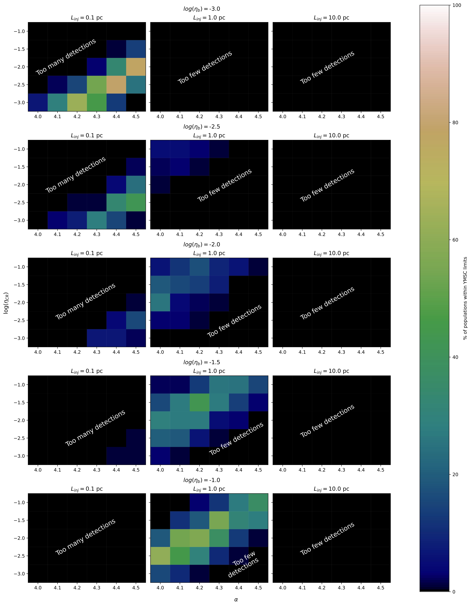
图注：2D histograms showing the percentage of realisations that agree with the observational constraints. The $y$-axis is the fraction of wind luminosity converted into CRs, and the $x$-axis is the spectral index. Columns correspond to different injection scales, and rows indicate the fraction of wind luminosity converted into magnetic field. The Kolmogorov diffusion regime is assumed.
对应解读：建议重点查看的图表 1；关键图表逐图导读 图 2；模型拟合段落中的参数扫描与超过75%实现接受准则。
入选理由：这是最直接的参数空间接受/排除图，展示在 Kolmogorov 扩散下，不同谱指数 alpha、宇宙线效率 \(eta_CR\)、磁场能量比例 \(eta_b\) 和注入尺度组合中，有多少蒙特卡洛实现满足 HGPS 与 LHAASO 观测约束。它对应日报中最核心的前向建模结论，可直接判断可接受区域、参数退化和被排除区域。
来源与置信度：\(arxiv_source\)；high；\(arxiv_source\) / \(Population_Galactic_YMSCs.tex\):figure[2]
Fig03
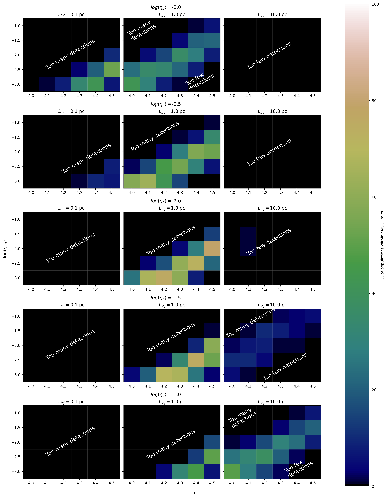
图注：Same as Fig.~\(\ref{fig:Kolmogorov}\) with Kraichnan diffusion.
对应解读：建议重点查看的图表 1、4、6；关键图表逐图导读 图 2；模型拟合段落中扩散模型对源数和可见性的影响。
入选理由：该图与 Fig02 同结构，但切换到 Kraichnan 扩散，是比较不同扩散机制下参数接受率的关键图。它能检验日报中关于 \(eta_CR\)、alpha、\(eta_b\) 与扩散模型退化的讨论，也有助于理解哪些参数组可能构成摘要所说的可接受解。
来源与置信度：\(arxiv_source\)；high；\(arxiv_source\) / \(Population_Galactic_YMSCs.tex\):figure[3]
Fig04
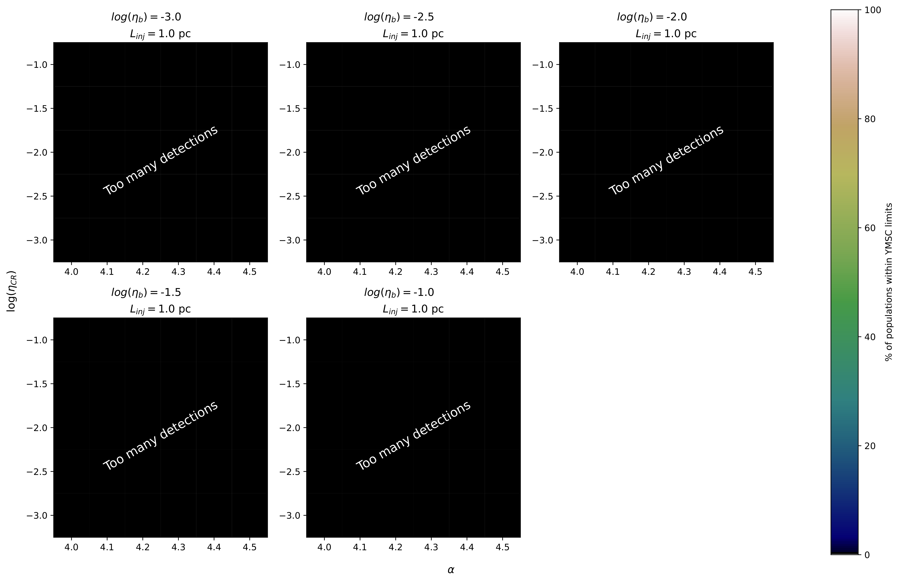
图注：Same as Fig.~\(\ref{fig:Kolmogorov}\) with Bohm diffusion and only showing one turbulence injection scale since it does not change anything.
对应解读：建议重点查看的图表 1 和 6；关键图表逐图导读 图 2、图 6；模型拟合段落中 Bohm 扩散被强烈不支持的结论。
入选理由：Bohm 扩散是否被排除是日报反复强调的关键物理结论。该图专门给出 Bohm 扩散下的接受率，并说明注入尺度变化影响很小，因此比一般示意图更能支撑‘Bohm diffusion strongly disfavoured’这一核心判断。
来源与置信度：\(arxiv_source\)；high；\(arxiv_source\) / \(Population_Galactic_YMSCs.tex\):figure[4]
Fig01
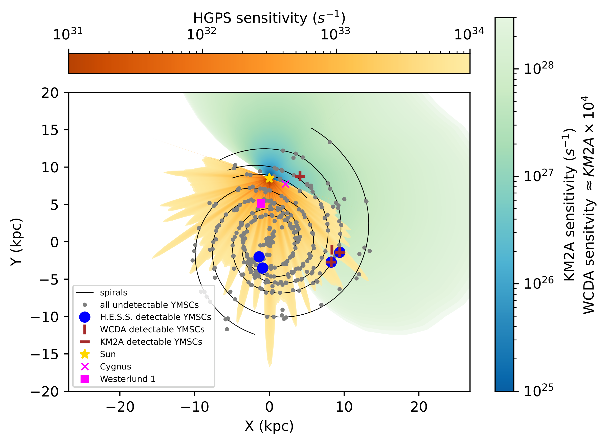
图注：Example of one realisation of a simulated population of Galactic YMSCs. The orange shaded region indicates the HGPS detectability range for point-like sources with varying luminosities, the maximum shown region si for a luminosity of $10^{34}$ photons\,s$^{-1}$ (equivalent to a differential flux at 1\,TeV of $\sim 8 \times 10^{-11}\,{\rm TeV^{-1}\,cm^{-2}\,s^{-1}}$ at a distance of 1\,kpc). The blue-green shaded region shows the LHAASO detectability range for point-like sources with varying luminosities, the maximum shown region is for luminosities of $1\times 10^{33}$ photons\,s$^{-1}$ and $3\times 10^{28}$ photons\,s$^{-1}$, corresponding to differential fluxes of $\sim 8 \times 10^{-12}\,{\rm TeV^{-1}\,cm^{-2}\,s^{-1}}$ at 3\,TeV and $\sim 3 \times 10^{-16}\,{\rm TeV^{-1}\,cm^{-2}\,s^{-1}}$ at 50\,TeV, respectively, at a distance of 1\,kpc, for the WCDA and KM2A. Grey dots mark simulated sources not detectable by any instrument, blue circles denote sources detectable only by H.E.S.S., red vertical lines identify those detectable by the WCDA and red horizontal lines identify those detectable by the KM2A. In this realisation, 1.7\% of the YMSCs are detectable by at least one instrument. The Sun is marked by the yellow star, and the spiral arms of the Milky Way are shown in black. The parameter set used for this population is: $\alpha = 4.5$, $\eta_{\rm CR} = 10^{-2.0}$, $\eta_{\rm b} = 10^{-2.0}$, $L_{\rm inj} = 1$\,pc, assuming the Kraichnan diffusion regime. The Cygnus bubble is shown by the pink cross and the Westerlund 1 cluster is shown by the pink square.
对应解读：建议重点查看的图表 2 和 5；关键图表逐图导读 图 1；详细解读中银河系 YMSC 蒙特卡洛种群、HGPS/LHAASO 选择函数与候选源空间分布。
入选理由：该图展示一次模拟银河 YMSC 种群实现、旋臂结构、太阳位置、HGPS 与 LHAASO 可探测区域，以及 H.E.S.S./WCDA/KM2A 可探测源分类。它不是最终参数接受图，但非常适合说明前向建模如何把银河分布和仪器选择函数连接到观测源表。
来源与置信度：\(arxiv_source\)；high；\(arxiv_source\) / \(Population_Galactic_YMSCs.tex\):figure[1]
强相关工作
这篇文章与近年关于 Cygnus Cocoon、Westerlund 1、Westerlund 2、30 Dor C 等大质量恒星形成区的 TeV/GeV 研究处在同一脉络。那些工作多从单个区域的多波段数据出发，强调局地宇宙线增强和硬谱辐射；本文则把问题推进到银河系种群层面。建议检索关键词包括“young massive star clusters cosmic rays TeV gamma rays”、“stellar clusters PeVatron”、“Cygnus Cocoon cosmic ray acceleration”、“Westerlund 1 HESS gamma rays”。
它也与超新星遗迹主导宇宙线起源的传统图像形成互补甚至张力。若 YMSC 可以解释越来越多 TeV 源，银河系宇宙线能量预算可能需要在孤立 SNR、星团风泡、脉冲星风云和复合区之间重新分配。不过这并不等于否定 SNR；许多 YMSC 环境本身也会包含后续超新星爆炸。关键问题是粒子加速发生在单个 SNR 激波，还是发生在星团尺度的集体风和湍流中。建议检索“Galactic cosmic ray origin supernova remnants review”、“superbubbles cosmic rays”、“HESS Galactic Plane Survey”、“LHAASO first catalog”。
相似工作：
- https://arxiv.org/abs/2605.07777
- https://arxiv.org/abs/2305.17030
基础理论 / 方法工作：
- https://arxiv.org/abs/1804.02432
相反观点 / 张力线索：
（未提供）
2. Detection of persistent helium absorption in the 91bg-like type Ia Supernova 2022an
- 来源：arXiv / astro-ph.HE
- 链接：https://arxiv.org/abs/2605.07827v1
- 作者：Ping Chen, Avishay Gal-Yam, Subo Dong, Renyue Cen, Boaz Katz, Kate Maguire, Steve Schulze, Jesper Sollerman
- 评分：novelty 8/10，importance 8/10，relevance 7/10，final 8.65/10
- 推荐理由：Strong observational claim of persistent He absorption in a 91bg-like Type Ia SN, supporting helium-bearing ejecta and sub-Chandrasekhar double-detonation scenarios. Not directly gamma-ray astronomy, but important for thermonuclear-transient physics and progenitor constraints within astro-ph.HE.
中文题目：在 91bg 类 Ia 型超新星 2022an 中探测到持续的氦吸收
做了什么：这篇文章报告了快速衰减 Ia 型超新星 SN 2022an 的光学和近红外观测。按光变和普通光谱性质看，它是标准的 91bg-like 事件；但作者在静止系约 1.037 微米处发现一条相对窄且持续存在的吸收特征，从最大光后约 30 天一直延续到近 90 天。他们将其解释为蓝移的 He I 1.083 微米线，对应速度约 \(1.3\times10^4\,\mathrm{km\,s^{-1}}\)，并由更早期光学 He I 跃迁支持。高速度和持续性说明这不是伴星剥离的外部氦，而更可能是爆炸抛射物外层未燃烧的含氦物质，为 91bg-like Ia 超新星中的氦壳双爆轰图像提供了强证据。
为什么重要：Ia 型超新星的前身星和爆炸机制仍是恒星演化与宇宙学测距中的核心问题。91bg-like 事件亮度低、衰减快、温度低，常被认为与亚钱德拉塞卡质量白矮星爆炸有关。双爆轰模型预言白矮星表面氦壳先爆轰并触发碳氧核心爆轰，但直接在谱中看到氦一直很困难。SN 2022an 的持续 He I 吸收为“含氦外层抛射物”提供了非常直接的诊断，连接了观测谱线和爆炸机制。
理论 / 观测 / 仪器方法价值：对理论而言，这个发现要求现代氦壳双爆轰模型计算更晚期的非局域热力学平衡光谱，尤其是最大光后 30–90 天近红外 He I 线的形成。对观测而言，它展示了近红外光谱在识别 Ia 爆炸外层成分方面的独特价值，普通光学分类可能会漏掉关键物理。对方法而言，文章提醒读者不能只依赖早期光学谱判定是否有氦；持续 NIR 监测可能是区分亚钱德拉双爆轰、伴星剥离物和其他前身通道的重要手段。
为什么应该关注：如果你研究 Ia 型超新星前身星、91bg-like 子类、双爆轰模型、NIR 光谱或热核爆炸核合成，这篇文章值得关注。它不是又一个分类样本，而是在一个典型 91bg-like 事件中找到异常但物理含义很强的谱线。这个结果可能推动理论光谱库补上一个明显空白：现代氦壳双爆轰模型在类似观测历元下如何表现 He I。
展开详细解读：文章讲解、背景、理论、重点章节、图表与相关工作
文章详细讲解
科学问题是：91bg-like Ia 型超新星是否来自亚钱德拉塞卡质量白矮星的氦壳双爆轰？该模型自然预言爆炸外层可能含有未燃尽的氦，但 Ia 超新星光谱中氦线长期难以确认。SN 2022an 在整体光变和光学光谱上是普通的 91bg-like 快速衰减事件，因此如果能在这样一个标准对象中识别持续氦吸收，就会对这类事件的爆炸通道产生直接影响。
作者获取并分析了 SN 2022an 的光学与近红外时序观测。光度和光谱分类显示它属于标准 91bg-like Ia 超新星，但在静止系约 \(1.037\,\mu\mathrm m\) 处存在一条相对窄的吸收特征，观测历元从最大光后约 30 天持续到近 90 天。该特征的观测位置、速度和宽度与 He I \(1.083\,\mu\mathrm m\) 蓝移吸收一致；更早期光学谱中多个 He I 跃迁也在约 \(1.5\times10^4\,\mathrm{km\,s^{-1}}\) 的较高速度处出现支持证据。
关键结果是，近红外特征若解释为 He I，则对应蓝移速度约 \(1.3\times10^4\,\mathrm{km\,s^{-1}}\)，FWHM 约 \(2.1\times10^3\,\mathrm{km\,s^{-1}}\)。这样的高速度不容易由爆炸时外部伴星剥离氦解释，因为伴星剥离物通常速度较低、空间分布和线宽特征也不同。相反，它更自然地指向高速外层抛射物中的未燃烧氦，正是亚钱德拉质量白矮星表面氦壳双爆轰可能留下的成分。
局限是，目前现代氦壳双爆轰模型很少计算到 SN 2022an 观测所覆盖的 30–90 天历元并专门研究 He I 近红外线形成。He I 线的激发还涉及非热电子、放射性沉积、NLTE 效应和混合结构，不能只用简单 LTE 线识别完全定论。下一步需要系统的晚期/过渡期 NIR 光谱模型、更多 91bg-like 事件的 NIR 时序样本，以及对可能混淆谱线的定量排除。
背景知识
Ia 型超新星通常被理解为碳氧白矮星的热核爆炸，但具体前身星通道仍有争议，包括接近钱德拉塞卡质量的单简并或双简并爆炸、亚钱德拉塞卡质量白矮星的中心点火、以及表面氦壳触发的双爆轰。91bg-like 是 Ia 超新星中的一个低光度、快速衰减、红色、低温子类，光谱中常见强 Ti II 吸收。它们的物理条件与普通 Branch-normal Ia 不同，因此常被视为检验亚钱德拉质量模型的重要样本。
双爆轰模型的基本设想是，白矮星表面积累的氦壳先发生爆轰，冲击波或压缩波随后触发碳氧核心爆轰。早期厚氦壳模型会产生过多铁族元素在外层，导致颜色和光谱与普通 Ia 不符；现代薄氦壳模型缓解了这一问题，并能更好地再现一些快速衰减或低光度 Ia 的性质。然而，观测上直接确认氦壳残留并不容易，因为氦线形成需要合适的激发条件，He I 1.083 微米线尤其依赖 NLTE 和非热过程。
现在值得重新看这个问题，是因为近红外时序光谱质量显著提高。光学谱常被大量中间质量元素和铁族线混合遮蔽，而 NIR 中 He I 1.083 微米是一条强诊断线，能够探测外层少量氦。SN 2022an 的特别之处在于：整体上它不是奇异事件，而是标准 91bg-like；异常之处集中在一条持续近红外吸收和若干早期光学 He I 候选线。这使得结果更难被简单归为“特殊个例”。
常见误区包括：第一，以为 Ia 超新星中没有氢氦线就必然没有氢氦物质；实际上是否显线取决于电离、激发、混合和放射性沉积。第二，以为看到 He I 就一定代表伴星剥离物；速度和时序信息非常关键，高速氦更可能属于抛射物外层。第三，把 91bg-like 全部归为同一种爆炸机制；该子类内部仍可能存在质量、氦壳厚度和视角差异。
基础理论 / 方法脉络
核心物理图像是同源膨胀抛射物中的吸收线形成。超新星爆炸后，抛射物近似满足 \(r=vt\)，不同速度层对应不同半径和成分。若外层存在氦，并且 He I 的下能级被热过程或非热过程有效布居，连续谱光子穿过高速氦层时会在 He I \(1.083\,\mu\mathrm m\) 共振附近被吸收。由于物质朝向观测者运动，吸收谷相对静止波长蓝移。
关键观测量包括吸收线中心波长、线宽、等效宽度、随时间演化和与其他 He I 跃迁的一致性。SN 2022an 中，静止系观测到的吸收约在 \(1.037\,\mu\mathrm m\)，若对应 He I \(1.083\,\mu\mathrm m\)，速度约为光速乘以相对波长差，即 \(\sim 1.3\times10^4\,\mathrm{km\,s^{-1}}\)。FWHM 约 75 Å 对应速度宽度 \(\sim 2.1\times10^3\,\mathrm{km\,s^{-1}}\)，说明吸收层相对窄，而不是整个抛射物大范围混合。
双爆轰解释的关键在于速度层。表面氦壳位于白矮星最外层，爆炸后自然出现在高速度抛射物中；伴星剥离物则通常较低速，并且可能更偏低纬或非球对称。若 He I 线在最大光后 30–90 天仍可见，说明氦所在速度层、局地激发条件和光学深度在较长时间内维持可观测吸收，这对模型光谱计算是很强的约束。
数据分析上要谨慎处理谱线混淆。1 微米附近可能有 Mg II、C I、Si I/II 或铁族元素线混合，91bg-like 低温光谱又有复杂线空白效应。因此可靠识别 He I 不能只靠单条线位置，而要结合速度一致性、多个 He I 跃迁、时间演化、线宽以及与模板谱的差异。
公式与推导
吸收线速度首先由多普勒蓝移估计。在非相对论近似下，
其中 \(\lambda_0=1.083\,\mu\mathrm m\) 是 He I 静止波长，\(\lambda_{\rm obs}\) 是超新星静止系中的吸收谷波长，\(c\) 是光速。代入 \(\lambda_{\rm obs}\approx1.037\,\mu\mathrm m\)，得到 \(v\sim1.3\times10^4\,\mathrm{km\,s^{-1}}\)。
线宽也可转换为速度宽度：
其中 \(\Delta\lambda_{\rm FWHM}\approx75\) Å。这个量反映吸收物质覆盖的速度范围，而不只是仪器分辨率；论文给出的约 \(2.1\times10^3\,\mathrm{km\,s^{-1}}\) 表明氦层相对局限。
在同源膨胀中，半径与速度满足
其中 \(t\) 是爆炸后时间或相对最大光的近似历元。高速度 He I 吸收意味着氦位于外层大半径区域。若最大光后几十天仍有吸收，说明这些外层物质在持续膨胀和变稀后仍有足够线光学深度。
谱线吸收强度可用 Sobolev 光学深度的简化形式理解：
其中 \(e\) 是电子电荷，\(m_e\) 是电子质量，\(f\) 是振子强度，\(n_l\) 是跃迁下能级粒子数密度，\(dv/dr\) 是速度梯度。同源膨胀下 \(dv/dr\approx1/t\)，因此
随着时间增加，密度下降会降低 \(n_l\)，但非热激发或电离状态变化可能让 He I 线在特定阶段增强或持续。
观测等效宽度可写为
其中 \(F_\lambda\) 是观测通量，\(F_{\lambda,\rm cont}\) 是局部连续谱或伪连续谱。对 91bg-like 事件，伪连续谱受大量金属线影响，因而 \(W_\lambda\) 的系统误差来自连续谱定义和模板扣除。
模型拟合 / 应用方法
这篇文章的核心拟合是谱线识别和时序一致性分析，而不是大规模参数后验拟合。作者需要先确定 SN 2022an 的红移和相位，把观测谱转换到静止系；随后在近红外谱中拟合或测量 1.037 微米附近吸收谷的位置、FWHM 和持续时间，并检验它与 He I 1.083 微米在同一速度下是否一致。早期光学 He I 候选跃迁提供交叉验证，要求不同跃迁给出相近的速度层。
参数估计中最重要的量是吸收中心速度、线宽、等效宽度及其时间演化。若用高斯或 P-Cygni 吸收轮廓近似，似然通常来自谱流量残差，误差包括光谱噪声、 telluric 校正、通量定标、宿主红移和伪连续谱选取。由于 1 微米附近受大气吸收和 NIR 仪器响应影响，telluric 残差是必须严肃检查的系统误差。
退化关系主要是谱线混淆与激发条件。某些中间质量元素或铁族线可能在相近波长形成吸收；改变温度、电离状态和速度分布也可能移动或改变谱线形状。因此判断 He I 需要多个证据同时成立：NIR 1.083 微米线位置合理，光学 He I 跃迁速度一致，线随时间演化不像 telluric 或噪声伪迹，且替代离子解释不能自然解释全部特征。
实际应用上，这种拟合框架可用于未来 NIR Ia 样本：先做标准光变/光谱分类，再在 He I 1.083 微米、2.058 微米和光学 He I 线处做速度一致性搜索，并与双爆轰辐射转移模型比较。残差图尤其重要：如果扣除 91bg-like 模板后只在 He I 预期位置留下系统吸收，并且多历元重复出现，可信度会大幅提高。
重点章节 / 结果段落怎么读
-
观测和数据处理：重点读光学与近红外观测的时间覆盖、仪器、分辨率、telluric 校正和相位定义。He I 1.083 微米附近非常容易受大气和校准影响，因此数据质量是结论基础。
-
光变与分类：看作者如何证明 SN 2022an 是标准 91bg-like 事件，包括快速衰减、低温光谱特征和与模板的比较。这一步很重要，因为结论的力量来自“普通 91bg-like 中出现氦”。
-
近红外吸收特征识别：这是全文核心。应检查 1.037 微米吸收的中心、FWHM、等效宽度、信噪比和多历元持续性。特别要看作者如何排除 telluric 残差或其他离子。
-
光学 He I 线的辅助证据：读者应关注多个 He I 跃迁是否给出一致速度，早期速度约 \(1.5\times10^4\,\mathrm{km\,s^{-1}}\) 是否能自然演化到后期 NIR 的 \(1.3\times10^4\,\mathrm{km\,s^{-1}}\)。
-
物理解释和前身星讨论：重点看作者为什么排除伴星剥离氦，为什么支持外层未燃烧氦，以及与亚钱德拉质量双爆轰模型的联系。
-
理论缺口和展望：应读作者指出的模型不足，即现代氦壳双爆轰尚缺少与这些观测历元直接可比的光谱计算。这个缺口决定了结论目前是强诊断证据，而非完整定量反演。
建议重点查看的图表
-
光变曲线与 91bg-like 模板比较：看 SN 2022an 是否确实快速衰减且低光度，避免把一个非典型 Ia 误归为 91bg-like。
-
光学光谱序列：检查 Ti II、Si II 等分类特征，以及早期 He I 候选线是否在多个波段以一致速度出现。
-
NIR 光谱序列：重点看 1.037 微米吸收从最大光后约 30 到 90 天是否稳定存在，是否跨仪器/多历元重复。
-
He I 1.083 微米速度标记图：应检查吸收谷与 \(1.3\times10^4\,\mathrm{km\,s^{-1}}\) 蓝移位置是否对齐，线宽是否与文中 FWHM 一致。
-
替代谱线识别或模板对比图：看 Mg、C、Si、Fe 族线是否可能解释该特征；如果替代解释需要不合理速度或不能解释光学线，就削弱替代方案。
-
等效宽度/速度随时间演化图：检查速度是否平滑变化或保持在合理范围，警惕单个异常点驱动结论。
-
模型示意或文献模型比较图：若有双爆轰模型谱，应看模型是否预测外层氦或相近吸收，但也要注意作者承认缺少相同晚期模型。
关键图表逐图导读
图 1：光变曲线图。横轴通常是相对最大光的天数，纵轴是多波段星等或绝对星等；数据点为 SN 2022an，不同颜色表示不同滤光片，可能叠加 91bg-like 模板。主要看衰减速度和颜色是否符合 91bg-like。读图陷阱是忽略消光和距离模数不确定性，它们会影响绝对亮度但不完全改变衰减分类。
图 2：光学光谱分类序列。横轴是静止系波长，纵轴是归一化通量并按相位错开。模型线或对比谱可能来自 SN 1991bg 类模板。应看 Ti II 吸收、Si II 速度和整体低温谱形，同时检查标出的 He I 光学跃迁是否在同一速度框架下对齐。
图 3：近红外光谱序列。横轴为 0.8–1.3 微米或类似范围的静止系波长，纵轴为归一化通量。关键数据点是约 1.037 微米的吸收谷；竖线可能标注 He I 1.083 微米按 \(1.3\times10^4\,\mathrm{km\,s^{-1}}\) 蓝移后的位置。主要结论是该吸收跨多个历元持续存在。读图陷阱是 NIR telluric 区域残差，需要看误差谱和大气吸收区标记。
图 4：吸收线局部拟合图。横轴为局部波长或速度，纵轴为连续谱归一化通量；可能有高斯/P-Cygni 拟合线和残差。应检查 FWHM 约 75 Å 是否由真实线宽主导，而不是分辨率或平滑造成。残差若在吸收两翼系统偏离，说明单一高斯模型可能过简化。
图 5：速度随时间演化图。横轴为相对最大光天数，纵轴为 He I 吸收速度；NIR 和光学 He I 点可用不同符号表示。重点看早期约 \(1.5\times10^4\,\mathrm{km\,s^{-1}}\) 到后期约 \(1.3\times10^4\,\mathrm{km\,s^{-1}}\) 是否形成合理演化，而非彼此矛盾。
图 6：替代识别或模型比较图。横轴为波长，纵轴为通量，可能叠加不同离子标记或文献模型谱。读者应看替代离子是否需要与其他强线不一致的速度，或者是否会预言未观测到的更强吸收。该图决定 He I 解释的排他性。
论文原图 / 可嵌入图片
Fig10
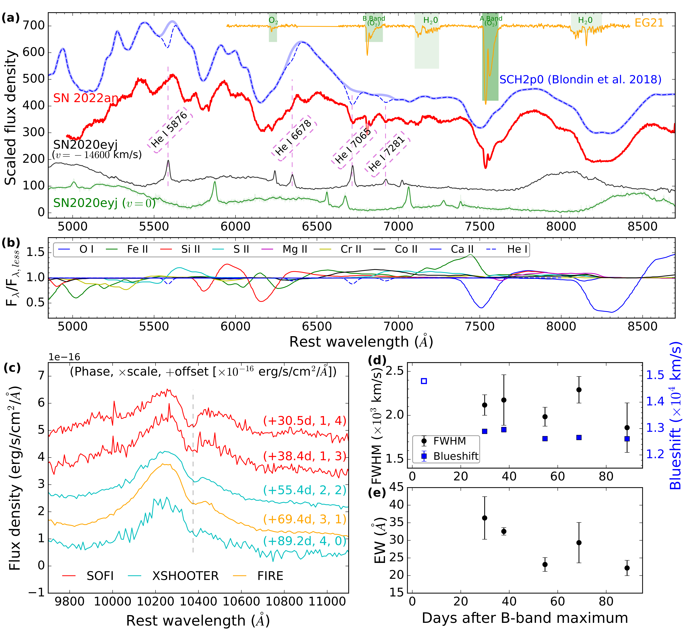
图注：{\(\bf\) (a)} \(\ion{He}{1}\) absorption features in the optical spectrum of SN 2022an (red line), obtained with SOAR/GHTS at +5.3 days relative to $B$-band maximum. The blue vertical dashed lines denote the identified \(\ion{He}{1}\) lines at $\lambda$5876, $\lambda$6678, $\lambda$7065, $\lambda$7281. For comparison, spectra of SN 2020eyj, a Type Ia supernova interacting with helium-rich circumstellar material that exhibits \(\ion{He}{1}\) emission \(\citep{Kool2023_2020eyj},\) are shown in green (rest frame) and black (blueshifted by 14,600\kms). Also shown is the synthetic spectrum from a sub-Chandrasekhar mass explosion model \(\citep{Blondin2018}.\) The solid blue line represents the SCH2p0 model at +5.3 days, while the dashed blue line shows the same model after adding \(\ion{He}{1}\) absorption features (see Section~\(\ref{sec:helium_iden}\) for details). A telluric standard star (EG21) observed on the same night is plotted to indicate atmospheric absorption bands. {\(\bf\) (b)} Ion contributions to the synthetic spectrum in panel (a). Spectra for individual ions, all except \(\ion{He}{1}\) extracted from \(\cite{Blondin2018},\) represent the ratio of the full spectrum (F$_\lambda$) to that excluding bound–bound transitions of the corresponding ion (F$_{\lambda, \rm{less}}$). Only ions altering the flux by $>$10\% within 5000–8500 \(\AA\\) are displayed. The \(\ion{He}{1}\) mock spectrum is indicated by the dashed line. This comparison illustrates how line blending complicates the identification of specific ions. {\(\bf\) (c)} Zoomed-in NIR spectra of SN\,2022an centered on the \(\ion{He}{1}\) 1.083\,$\mu m$ absorption feature (marked by vertical dashed lines). For clarity, the spectra have been vertically scaled and offset; the scaling factors, offsets, and phases relative to $B$-band maximum are indicated in parentheses. {\(\bf\) (d)}{\(\bf\) (e)} The measured properties of the \(\ion{He}{1}\) 1.083\,$\mu m$ line. The FWHM and the blueshifted velocity of the absorption line are presented in panel (d), and the equivalent width (EW) in panel (e). The blueshift velocity from the optical helium lines is added as an unfilled symbol.
对应解读：对应“关键图表逐图导读”中的图 4、图 5，以及“建议重点查看的图表”第 2、3、4、6 项：光学 He I 候选线、NIR He I 1.083 μm 吸收、FWHM/速度/EW 随时间演化。
入选理由：这是全文最核心的氦吸收证据汇总图：同时给出早期光学 He I 多条跃迁、NIR 1.083 μm 局部序列、吸收速度、FWHM 和等效宽度演化，并包含与模型及 telluric 标准的对照。它直接支撑日报关于 1.3×10^4 km/s 后期速度、约 1.5×10^4 km/s 早期光学速度、FWHM 和多历元持续性的主要解读。
来源与置信度：\(arxiv_source\)；high；\(arxiv_source\) / main.tex:figure[10]
Fig09
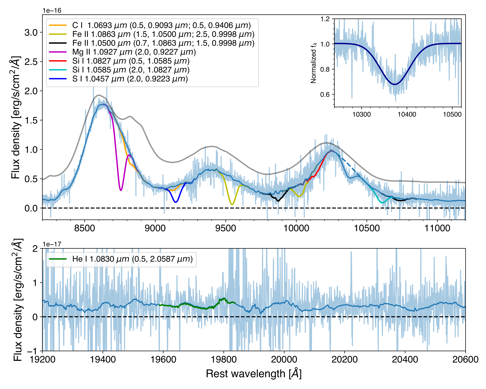
图注：Line identification of the absorption feature in the NIR spectrum of SN\,2022an. The +55.4-day X-Shooter spectrum and its smoothed version are shown in blue, with the original data shown in light color. The synthetic spectrum of the SCH2p0 model at a phase of +58.9 days after the $B$-band peak, from \(\cite{Blondin2018},\) is shown in grey for comparison. The absorption feature at around 1.037 $\mu$m is superposed on an emission feature attributed to \(\ion{S}{2}\) \(\citep{Blondin2018}.\) The blue dashed line shows the equivalent pseudo-continuum, i.e., the estimated line profile of the underlying emission if absorption were absent. The inset panel shows the normalized spectrum (blue) of SN\,2022an around the absorption feature, along with its best-fit Gaussian profile (dark blue). Assuming that the detected absorption feature arises from a given ion, the expected absorptions from other transitions of that same ion \(\citep{Marion2009}\) are shown as colored line segments. The legend labels have the format ``Ion $\lambda _1 (k_2, \lambda_2; k_3, \lambda_3; ...)$'' where $\lambda _1$ is the rest-frame wavelength of the transition of the given ion to account for the observed absorption, $\lambda_{2,3,...}$ gives the rest-frame wavelength of other transition of the same ion, and $k_{2,3,...}$ corresponds to the ratio of the mock absorption at $\lambda_{2,3,...}$ to the observed absorption at $\lambda_1$. For example, if the observed absorption feature is the \(\ion{Mg}{2}\) 1.0927 $\mu m$ line, the \(\ion{Mg}{2}\) 0.9227 $\mu m$ line with twice the strength would cause an absorption shown in the magenta line.
对应解读：对应“建议重点查看的图表”第 5 项和“关键图表逐图导读”中的图 4、图 6：1.037 μm 吸收的局部拟合、伪连续谱、Gaussian 线型以及替代离子识别检验。
入选理由：该图直接检验 1.037 μm 特征是否应归因于 He I，而不是 Mg II、C I 或其他离子；还展示平滑谱、原始谱、伪连续谱、Gaussian 拟合和其他跃迁预期吸收强度，是判断谱线识别排他性的关键图。
来源与置信度：\(arxiv_source\)；high；\(arxiv_source\) / main.tex:figure[9]
Fig02
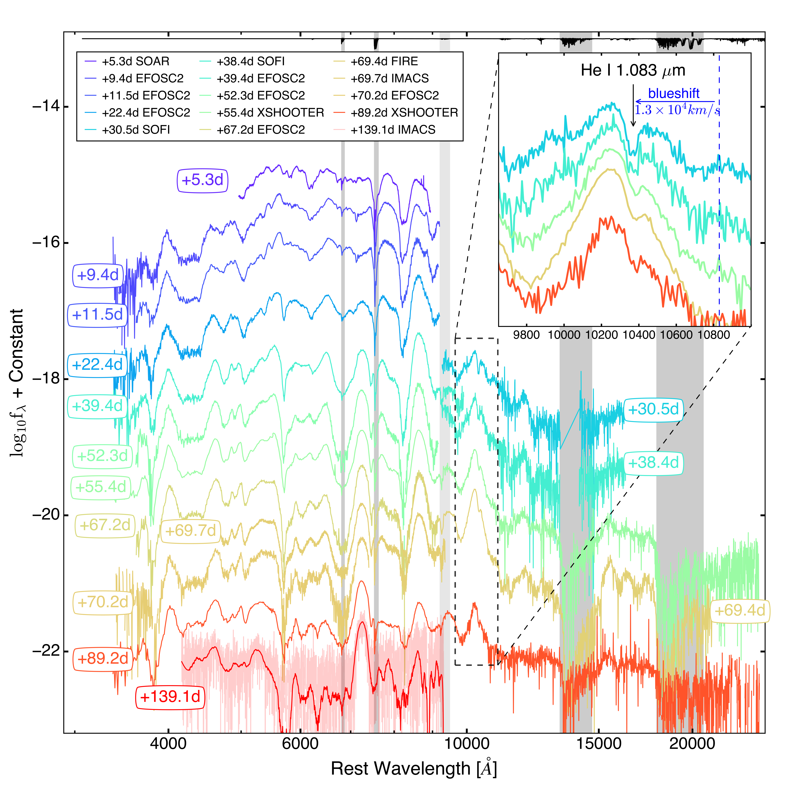
图注：Optical and NIR spectra of SN\,2022an. The phases of the spectra are given with respect to the $B$-band maximum time of JD=2459582. A telluric spectrum is shown on the top of the plot, and those significant telluric regions are marked with vertical grey bands. The inset panel shows the zoom-in view around the detected absorption feature indicated by the black arrow, which, as discussed in the following sections, we attribute to the blueshifted \(\ion{He}{1}\) line from its rest-frame wavelength of 1.083 $\mu m$ (vertical dashed line).
对应解读：对应“建议重点查看的图表”第 3、4 项和“关键图表逐图导读”中的图 3：光学与近红外光谱序列、telluric 区域标记、1.083 μm He I 蓝移吸收位置。
入选理由：这张图提供从整体光谱序列到 NIR 吸收特征的直接观测背景，特别标出 telluric 区域和 1.083 μm rest-frame 位置，有助于读者判断 1.037 μm 吸收是否跨历元真实存在以及是否可能受大气残差影响。
来源与置信度：\(arxiv_source\)；high；\(arxiv_source\) / main.tex:figure[2]
Fig01
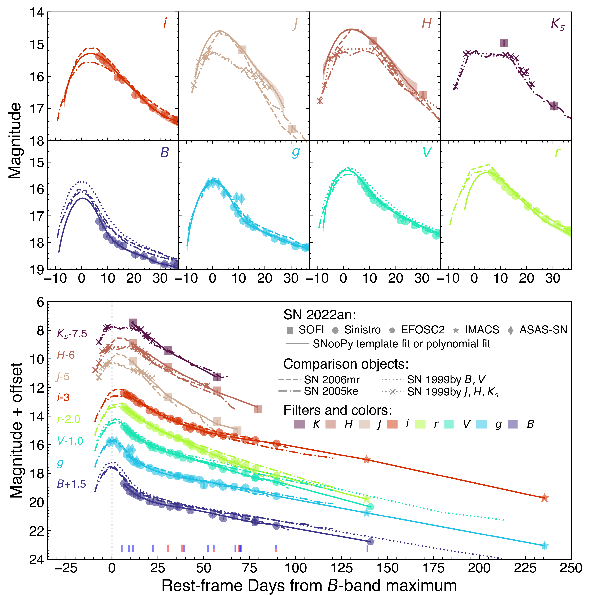
图注：The multiband light curves of SN\,2022an and comparison with other 91bg-like SNe Ia. The bottom panel shows the full range of the light curves, while the top panels show zoomed-in views around the peak light. All the panels share the same color, symbol, and line-style scheme as shown in the legend of the bottom panel: colors distinguish different filters, symbols distinguish different instruments used for SN\,2022an photometry, and line styles distinguish different objects. The solid lines in the top panels show the fitting results for the SN\,2022an light curves using the template-matching method adopted in SNooPy \(\citep{Burns2011, Burns2014}.\) And the solid lines in the bottom panel show the polynomial fit to the SN\,2022an light curves. Three low-luminosity 91bg-like SNe Ia, SN\,1999by \(\citep{Garnavich2004_1999by, Hoflich2002_1999by},\) SN\,2005ke \(\citep{Krisciunas2017_CSP_dr3},\) and SN\,2006mr \(\citep{Krisciunas2017_CSP_dr3},\) are shown for comparison. The magnitudes of the reference objects have been shifted to match the distance of SN\,2022an. The following distance moduli are adopted: $\mu_ {\rm SN\,1999by}=30.75$ mag, $\mu_{\rm SN\,2005ke}=31.60$ mag, and $\mu_{\rm SN\,2006mr}=31.25$ mag. For SN\,2006mr, an additional shift of $-1$ magnitude is applied to all filters after correcting for the distance difference. Galactic extinction is corrected for all objects; host galaxy extinction is not. The epochs of the observed spectra listed in Table \(\ref{tab:spec_log}\) are indicated as vertical lines at the bottom. The optical spectra are in blue, and the NIR spectra are in red.
对应解读：对应“建议重点查看的图表”第 1 项和“关键图表逐图导读”中的图 1：多波段光变曲线与 91bg-like SNe Ia 模板/样本比较。
入选理由：该图用于确立 SN 2022an 是快速衰减、低光度的 91bg-like Ia 事件，是后续把氦吸收解释放入亚钱德拉双爆轰语境的前提。它还标出光谱观测历元，可把光变阶段与 NIR/光学谱线出现时间联系起来。
来源与置信度：\(arxiv_source\)；high；\(arxiv_source\) / main.tex:figure[1]
Fig06
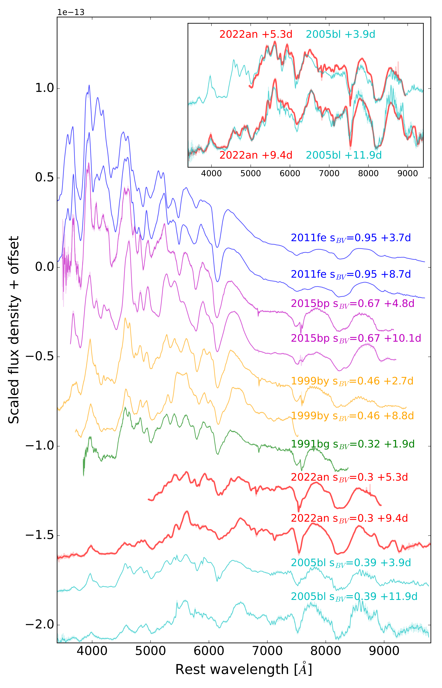
图注：Spectra of SN\,2022an compared to those of normal Ia SN\,2011fe \(\citep{Pereira2013_2011fe},\) transitional Ia SN\,2015bp \(\citep{Wyatt2021_2015bp},\) SN\,1991bg \(\citep{Filippenko1992b_1991bg, Leibundgut1993_1991bg},\) and 91bg-like Ia SN\,1999by \(\citep{Garnavich2004_1999by,Hoflich2002_1999by}\) and SN\,2005bl \(\citep{Taubenberger2008_2005bl, Hachinger2009_2005bl}.\) The color stretch parameter $s_{BV}$ of the supernova and the phase after $B$-band maximum of the spectrum are listed.
对应解读：对应“建议重点查看的图表”第 2 项和“关键图表逐图导读”中的图 2：光学光谱分类序列及与 normal、transitional、91bg-like Ia 的比较。
入选理由：该图支撑 SN 2022an 在光谱上属于 91bg-like，而不是普通 Ia 或过渡型 Ia；通过与 SN 1991bg、SN 1999by、SN 2005bl 等对象比较，可检查 Ti II、低温谱形和整体分类依据。
来源与置信度：\(arxiv_source\)；high；\(arxiv_source\) / main.tex:figure[6]
Fig11
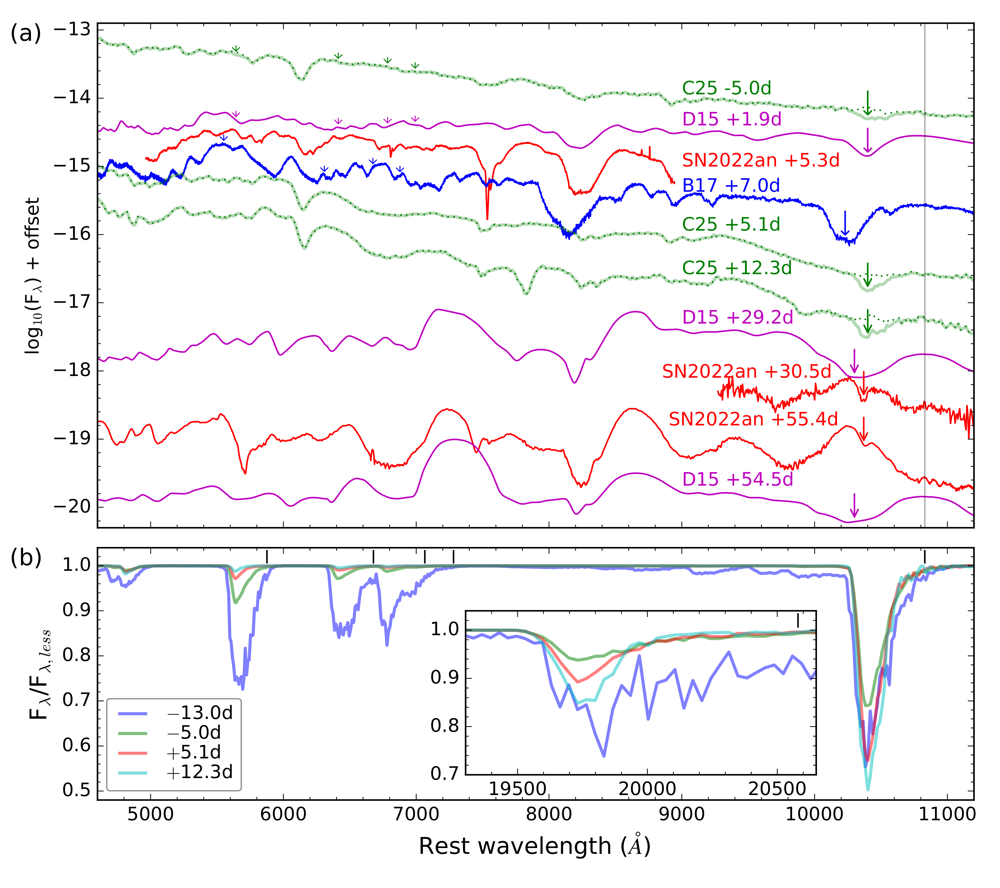
图注：{\(\bf\) (a)} Spectra of SN\,2022an in red compared with model spectra from \(\cite{Dessart2015}\) (D15) in magenta, \(\cite{Boyle2017}(B17)\) in blue, and \(\cite{Callan2025}(C25)\) in green. For C25, both the full model spectra and those omitting \(\ion{He}{1}\) line opacity are plotted with solid and dotted lines, respectively. The phase of each spectrum, relative to the $B$-band peak in days, is labeled. The vertical black line indicates the rest-frame wavelength of the \(\ion{He}{1}\) 1.083 $\mu m$ line, while the corresponding observed absorption in SN\,2022an and the synthetic features in the model spectra are marked by arrows. The absorption features corresponding to the \(\ion{He}{1}\) lines at $\lambda$5876, $\lambda$6678, $\lambda$7065, and $\lambda$7281, which have the same blueshift velocity as the 1.083 $\mu$m line, are indicated with short arrows in the model spectra for the earliest epochs of each category. {\(\bf\) (b)} The normalized version of the C25 model spectra, i.e., the full model spectra divided by the corresponding spectra omitting He line opacity. Different colors indicate different phases. The wavelength range around the \(\ion{He}{1}\) 2.058 $\mu m$ is shown in the inset panel. The rest wavelengths of the \(\ion{He}{1}\) lines are indicated by the vertical black lines.
对应解读：对应“建议重点查看的图表”第 7 项和“模型拟合/模型比较”段落：He I 线与文献双爆轰或含氦模型谱的比较。
入选理由：该图展示 SN 2022an 与多个含氦/双爆轰相关模型在 He I 1.083 μm、光学 He I 线以及 2.058 μm 区域的对比，能够支持日报中关于理论模型尚未完全覆盖 30–90 天观测历元、但氦壳双爆轰仍是自然解释的讨论。
来源与置信度：\(arxiv_source\)；high；\(arxiv_source\) / main.tex:figure[11]
强相关工作
这项工作直接关联 91bg-like Ia 超新星的前身星讨论。SN 1991bg 及其同类事件长期被认为可能代表低质量、低镍产额的热核爆炸，许多研究尝试用亚钱德拉质量爆炸解释其低光度和快速衰减。SN 2022an 的新贡献是把光谱成分证据，尤其是高速氦，加入这条论证链。建议检索关键词：“SN 1991bg-like Type Ia supernova sub-Chandrasekhar”、“91bg-like double detonation”、“helium shell detonation Type Ia spectra”。
它也与早期双爆轰模型和现代薄氦壳模型之间的张力有关。老模型常因外层核合成产物过多而与观测颜色/谱不符，现代模型通过较薄氦壳和不同混合条件改善匹配；但本文指出，在最大光后 30–90 天直接预测 He I NIR 特征的现代计算仍不足。另一方面，伴星剥离物或星周氦也可产生氦线的想法需要面对速度问题：SN 2022an 的氦速度太高，更像抛射物外层而非低速剥离物。建议检索：“He I 1.083 micron Type Ia supernova”、“stripped helium companion Type Ia spectra”、“NLTE helium line formation supernova ejecta”。
相似工作：
- https://arxiv.org/abs/2605.07827
基础理论 / 方法工作：
（未提供）
相反观点 / 张力线索：
（未提供）
3. Magnetar field dynamics driven by chiral anomalies without magnetic helicity
- 来源：arXiv / astro-ph.HE
- 链接：https://arxiv.org/abs/2605.08068v1
- 作者：Clara Dehman
- 评分：novelty 7/10，importance 6/10，relevance 8/10，final 8.00/10
- 推荐理由：astro-ph.HE magnetar-field-evolution theory. The key new point is that chiral-magnetic-effect-driven magnetar-strength dipoles can arise even from initially non-helical configurations, relaxing an important assumption of earlier work. Important for neutron-star/magnetar formation, though still theoretical and dependent on uncertain chiral-chemical-potential and birth-field conditions.
中文题目：手征反常在无净磁螺旋度初态下驱动磁星磁场演化
做了什么：这篇文章研究中子星内部的手征磁效应是否必须依赖“出生时已有净磁螺旋度”才能放大出磁星级偶极场。作者把初始磁场的螺旋度分布从有净螺旋度扩展到无净螺旋度情形，发现即使总磁螺旋度为零，局域螺旋结构也能通过手征反常诱导残余手征不对称，并在几十年尺度内生成 \(B_{\rm dip}\gtrsim 10^{14}\,\mathrm{G}\) 的偶极磁场。触发条件主要由最大手征化学势控制，磁星区间大致需要 \(\mu_5^{\rm max}\gtrsim\) 几 \(\times10^{-11}\,\mathrm{MeV}\)。结论是：CME 作为磁星形成机制不再局限于“有净螺旋度”的理想初态，但后续磁场是否稳定、是否通过手征反常继续衰减，强烈依赖出生时的螺旋度谱分布。
为什么重要：磁星的 \(10^{14}-10^{15}\,\mathrm{G}\) 级磁场来源仍是高能天体物理中的核心问题。传统解释依赖原初强场、快速差分旋转发电机或磁通守恒，但这些机制对前身星自转、超新星动力学和磁场拓扑有很强要求。本文的重要性在于把手征磁效应从“需要初始净磁螺旋度”的特殊情形推广到更现实的、总螺旋度可能为零但局域结构复杂的中子星磁场初态。它直接触及一个难观测但决定性的量：中子星出生时磁螺旋度如何分布。
理论 / 观测 / 仪器方法价值：对理论而言，文章给出了手征反常、磁螺旋度和大尺度偶极场之间更一般的演化图像，说明净螺旋度不是 CME 放大磁星场的必要条件。对观测解释而言，它提供了一个把磁星偶极场强、早期演化时间尺度和内部拓扑联系起来的框架，有助于理解为什么某些年轻中子星能迅速进入磁星状态，而另一些可能只表现为普通高磁场脉冲星。对方法而言，文章强调不能只用总螺旋度一个数描述初始磁拓扑，螺旋度的尺度分布和局域结构才是判断后续演化的关键。
为什么应该关注：如果你关心磁星的形成率、年轻中子星的磁热演化、快速射电暴或高能爆发的中央引擎，这篇文章值得看。它说明磁星级偶极场可能在出生后几十年内由微观量子反常过程重塑，而不是完全由超新星爆发瞬间决定。更重要的是，它把一个通常被认为偏粒子物理的量 \(\mu_5\) 推到了可影响宏观天体磁场结构的位置：未来磁星人口统计、年龄—磁场分布和热光度演化都可能反过来约束中子星内部的手征不平衡和初始磁拓扑。
展开详细解读：文章讲解、背景、理论、重点章节、图表与相关工作
文章详细讲解
科学问题：磁星场的形成机制必须解释两个事实：一是外部偶极场可达到 \(10^{14}\,\mathrm{G}\) 以上，二是这个强场可能在中子星很年轻时已经存在。手征磁效应提供了一条把费米子手征不对称转化为磁场拓扑和磁能的途径。此前 Dehman & Pons 的相关工作显示，如果初始磁场带有净磁螺旋度，CME 可以有效地产生磁星级偶极场。但问题在于，中子星出生时是否具有全局净磁螺旋度并不清楚；核心坍缩、湍流、差分旋转和小尺度发电机可能产生复杂拓扑，局域螺旋结构丰富，但全局积分后总螺旋度接近零。
作者怎么做：本文把初始条件系统扩展到不同螺旋度配置，包括净螺旋度为零的非螺旋初态。核心思想不是只追踪总磁能或总螺旋度，而是看局域螺旋结构如何通过手征反常产生残余手征化学势 \(\mu_5\)，并进一步触发 CME 不稳定性。作者比较不同初始螺旋度谱、不同 \(\mu_5\) 最大值和不同磁场拓扑下，大尺度偶极分量的增长、饱和和后续衰减。
关键结果：即使总初始螺旋度为零，CME 仍可在几十年尺度上生成 \(B_{\rm dip}\gtrsim10^{14}\,\mathrm{G}\) 的磁星级偶极场。触发与否主要由最大手征化学势决定，而不是由全局净螺旋度单独决定；在磁星参数区间，需要 \(\mu_5^{\rm max}\gtrsim\) 几 \(\times10^{-11}\,\mathrm{MeV}\)。作者还发现生成的偶极场存在两类后续命运：若获得的螺旋度不足以驱动进一步手征不稳定，它可以相对稳定，并主要经欧姆耗散缓慢演化；若大尺度场积累了足够螺旋度，则可能再次通过手征反常通道衰减，把能量转移到螺旋性较弱的模态。
局限和下一步：这类研究仍然依赖对中子星内部微观输运系数、温度演化、电子手征翻转率、边界条件和磁场几何的建模假设。真实出生磁场可能来自三维 MHD 湍流和超新星动力学，螺旋度谱很难直接给定。下一步应把 CME 演化与磁热演化、弹塑性地壳响应、中微子冷却和更现实的三维初始磁场连接起来，并探索这些内部拓扑差异是否能在磁星年龄分布、爆发活跃性或制动指数中留下可观测痕迹。
背景知识
研究对象是磁星，即外部偶极场通常达到 \(10^{14}-10^{15}\,\mathrm{G}\)、并通过磁能释放表现出 X 射线爆发、巨耀发和长期高能辐射的中子星。磁星场从何而来长期有两类主线：一类认为强场来自前身星磁通守恒或核心坍缩中的磁场冻结；另一类强调新生中子星快速自转和差分旋转驱动的发电机。两者都能解释部分现象，但对初始自转、爆炸环境和磁场拓扑有较强要求。
手征磁效应来自量子场论中的手征反常。在强磁化、高密度费米子体系中，左右手粒子数不平衡可通过反常方程与磁场螺旋度相互转换。中子星内部电子高度简并，磁场极强，因而常被视为研究 CME 天体后果的天然实验室。过去几年相关理论尝试说明，小尺度或拓扑复杂的内部磁场可在手征不平衡驱动下向大尺度迁移，从而形成可观测的强偶极场。
为什么现在值得重新看？关键在于原先模型常假设初始磁场有净螺旋度，但核心坍缩产生的磁场未必满足这一点。湍流场可能在局域有正负螺旋结构，但全局相互抵消。若 CME 只有在净螺旋度非零时才有效，其作为通用磁星形成机制会受到很大限制；若局域螺旋度也足够触发演化，它的适用范围就大得多。
该领域一个常见误区是把“无净螺旋度”等同于“没有螺旋结构”。总螺旋度为零只说明体积分量抵消，并不排除局域磁通管、扭缠结构和不同尺度上的正负螺旋模态。另一个误区是把外部偶极场强直接等同于内部总磁能；实际上内部场可能强得多、拓扑也复杂得多，外部偶极只是最容易从脉冲星计时推断的低阶分量。
基础理论 / 方法脉络
核心物理图像是：手征不平衡用手征化学势 \(\mu_5\) 描述，它表示左右手费米子化学势的差异。存在 \(\mu_5\) 时，磁场可沿自身方向诱导电流，即手征磁电流 \(\mathbf{J}_{\rm CME}\propto \mu_5\mathbf{B}\)。这个电流进入感应方程后，会使某些螺旋磁模增长，形成一种依赖磁场拓扑和波数的电磁不稳定性。
磁螺旋度 \(H=\int \mathbf{A}\cdot\mathbf{B}\,dV\) 衡量磁力线缠绕、扭曲和联结程度。理想 MHD 中磁螺旋度近似守恒，有限电阻和手征反常会使它与粒子手征数交换。对中子星来说，总螺旋度、不同尺度上的螺旋度谱以及局域正负螺旋结构都重要。本文的关键推进是强调局域螺旋结构足以诱导残余 \(\mu_5\)，从而不需要初始全局净螺旋度。
观测上我们通常不能直接测量内部螺旋度或 \(\mu_5\)，只能通过外部偶极场、周期 \(P\)、周期导数 \(\dot P\)、热辐射和爆发现象间接推断磁场演化。理论模型因此要把内部磁能和拓扑演化投影到外部偶极分量。一个重要退化是：相同的当前 \(B_{\rm dip}\) 可以来自不同初始场强、不同 \(\mu_5\)、不同电导率和不同螺旋度谱；仅用计时磁场无法唯一反演内部物理。
在数据分析或数值模拟层面，CME 模型还对边界条件和耗散项敏感。欧姆耗散控制长期衰减，手征翻转过程会削弱 \(\mu_5\)，而温度演化又改变电导率和散射率。因此判断一个不稳定是否能在几十年内放大偶极场，必须同时比较 CME 增长时间、欧姆扩散时间和手征翻转时间。
公式与推导
可以从广义欧姆定律和感应方程出发。存在手征不平衡时，电流包含普通导电项和手征磁电流：
这里 \(\sigma\) 是电导率，\(\alpha\) 是精细结构常数，\(\mu_5=(\mu_R-\mu_L)/2\) 表示左右手费米子化学势不平衡，\(\mathbf{B}\) 是磁场。若忽略大尺度流速 \(\mathbf{v}\)，CME 电流沿磁场方向流动，可改变磁场拓扑。
将其代入法拉第定律和安培定律的 MHD 近似，可得到带 CME 项的感应方程：
其中 \(\eta\) 是磁扩散率，\(\alpha_5\) 类似平均场发电机中的 alpha 项，但来源是量子手征反常而非湍流。第一项导致欧姆衰减，第二项可驱动螺旋磁模增长。
对单一螺旋傅里叶模 \(\mathbf{B}_k\) 可写出近似增长率：
\(+\) 或 \(-\) 对应不同手性的螺旋模。若 \(|\alpha_5|k>\eta k^2\)，即 \(k<|\alpha_5|/\eta\)，某一手性的模会增长。最大增长通常出现在 \(k\sim |\alpha_5|/(2\eta)\)。这说明触发条件主要取决于 \(\mu_5\)、电导率和可用尺度，而不仅是总螺旋度。
磁螺旋度定义为：
\(\mathbf{A}\) 是矢势，\(H\) 描述磁力线的缠绕和联结。总 \(H=0\) 并不意味着每个局域区域或每个波数上的螺旋度为零；正负螺旋度可以相互抵消。本文的物理重点正是这种局域或谱空间中的螺旋结构仍可触发 CME。
手征反常给出手征数与磁螺旋度之间的交换关系，简化写作：
其中 \(N_5\) 是总手征不平衡，\(C\) 是由电荷和基本常数决定的系数，\(\Gamma_f\) 是手征翻转率。若 \(\Gamma_f\) 不太大，\(N_5+CH\) 近似守恒，磁螺旋度变化可转化为手征不平衡，反之亦然。
可观测偶极场常由磁偶极制动估计：
其中 \(P\) 是自转周期，\(\dot P\) 是周期导数。理论模拟给出的内部和外部磁场演化最终要与这个 \(B_{\rm dip}\) 量级比较。本文结论中的 \(B_{\rm dip}\gtrsim10^{14}\,\mathrm{G}\) 正是磁星计时测量对应的关键阈值。
模型拟合 / 应用方法
这类工作通常不是直接对单个观测样本做传统意义上的拟合，而是在一组物理参数空间中做数值演化和阈值判定。核心参数包括初始磁能、初始螺旋度谱、\(\mu_5\) 的空间分布和最大值、电导率、手征翻转率、边界条件以及是否耦合温度演化。输出量包括偶极分量随时间的增长曲线、总磁能、螺旋度、不同波数模态能量分布以及 \(\mu_5\) 的衰减或再生。
若要与观测连接，常见做法是把模型生成的 \(B_{\rm dip}(t)\) 与磁星和高磁场脉冲星的 \(P,\dot P\) 推断磁场、特征年龄、热光度和爆发活跃性比较。似然函数可围绕观测到的年龄—磁场分布、磁星形成率或群体合成结果建立，但目前最大困难是内部场拓扑不可直接观测，导致初始磁场强度、螺旋度分布和 \(\mu_5\) 之间存在强退化。
需要特别关注的系统误差包括：电导率和超流/超导状态的不确定性，地壳—核心耦合方式，手征翻转率的微观输入，数值分辨率对小尺度螺旋结构的影响，以及外部偶极边界条件对低阶模的影响。残差或偏差不应只看最终 \(B_{\rm dip}\)，还应看增长时间是否与年轻磁星年龄相容、磁能耗散是否会过热、以及后期衰减是否能解释不同年龄段磁星的观测分布。
重点章节 / 结果段落怎么读
-
引言和物理动机：重点读作者如何回顾 Dehman & Pons 2025 的有净螺旋度结果，以及为什么“出生时是否有磁螺旋度”是一个真实而非技术性的限制。这里决定了本文问题的价值：把 CME 从特殊初态推广到更一般初态。
-
理论模型和演化方程：应检查感应方程、CME 项、手征化学势演化和螺旋度定义。读者需要确认作者采用了哪些近似，例如是否忽略流体速度、是否假设固定温度或给定电导率、边界条件如何处理。
-
初始条件设计：这是全文关键。要看作者如何构造有净螺旋度、无净螺旋度和不同局域螺旋分布的磁场。特别注意“非螺旋”是否指总螺旋度为零，还是每个尺度都无螺旋结构；这两者物理含义完全不同。
-
数值结果：重点读偶极场增长曲线、\(\mu_5^{\rm max}\) 阈值、增长时间尺度和不同初态下最终状态。这里要判断结论是否确实对初始总螺旋度不敏感，还是对某些局域结构仍有依赖。
-
稳定性和后期演化讨论：作者区分了稳定欧姆衰减和进一步手征反常衰减两种命运。读者应关注决定分岔的量是总螺旋度、谱分布还是大尺度模的螺旋化程度。
-
结论和展望：建议把作者给出的 \(\mu_5\) 阈值与磁星观测量联系起来读，不要把它误解为已被观测测得的量，而应视为未来群体建模可约束的内部微观参数。
建议重点查看的图表
-
初始磁场和螺旋度谱图：检查不同模型的总螺旋度是否相同、局域螺旋结构是否不同，以及能量主要在什么尺度上。
-
偶极场 \(B_{\rm dip}(t)\) 演化图：看非螺旋初态是否也能在几十年内跨过 \(10^{14}\,\mathrm{G}\)，以及增长阶段、饱和阶段和衰减阶段是否清晰分离。
-
\(\mu_5^{\rm max}\) 阈值扫描图：重点看增长是否存在明显临界值，阈值附近结果是否连续，是否对初始拓扑有系统偏移。
-
磁能和磁螺旋度随时间演化图：判断能量是单纯放大偶极模，还是发生尺度间转移；看总螺旋度为零的模型是否仍出现局域或谱螺旋度重分布。
-
模态能谱或多极分解图：检查能量是否从小尺度向大尺度偶极迁移，还是只是某个预置低阶分量被增强。
-
稳定与不稳定后期分支对比图：看哪些模型进入欧姆衰减，哪些模型通过手征反常继续衰减，并比较其螺旋度分布差异。
-
参数表或运行列表：确认每个模型的初始场强、\(\mu_5\)、电导率和螺旋度定义，否则很难判断“与初始螺旋度无关”的适用范围。
关键图表逐图导读
图 1：通常应对应初始条件或磁场拓扑示意。横轴可能是半径、角度或波数，纵轴可能是磁能密度、螺旋度密度或归一化模态强度。读图时要分清总螺旋度为零和局域螺旋度为零；若正负螺旋度在不同区域抵消，CME 仍可能被局域结构触发。
图 2：应重点查看 \(B_{\rm dip}\) 随时间的曲线。横轴一般为演化时间，纵轴为偶极场强。关键是非螺旋初态曲线是否在几十年内越过 \(10^{14}\,\mathrm{G}\) 阈值，以及不同初态之间增长率和饱和值的差别。读图陷阱是只看最终场强，而忽略达到该场强所需时间是否符合年轻磁星约束。
图 3：若展示 \(\mu_5^{\rm max}\) 参数扫描，应看横轴 \(\mu_5^{\rm max}\) 与纵轴最大偶极场或增长率之间是否有临界行为。模型线或数据点的散布反映拓扑依赖。不要把阈值理解为精确常数；它通常依赖电导率、尺度和微观反应率。
图 4：磁能、磁螺旋度或手征不平衡的时间演化图是检验机制的核心。若 \(N_5\) 与 \(H\) 呈互补变化，说明反常交换在起作用。需要看是否存在数值耗散伪造的能量损失，尤其在小尺度结构丰富的运行中。
图 5：如果有多极分解或能谱图，横轴可能是多极阶数 \(\ell\) 或波数 \(k\)，纵轴为能量。真正的大尺度偶极生成应表现为低 \(\ell\) 或小 \(k\) 模态增强，而不仅是总磁能增加。读图时注意归一化方式：按总能量归一化可能掩盖绝对能量衰减。
图 6：稳定分支与不稳定分支的对比图应显示后期衰减路径。若高螺旋度模型更易通过手征反常衰减并向低螺旋模态转移能量，这将支持作者关于“后续命运依赖螺旋度分布”的结论。
论文原图 / 可嵌入图片
Fig06
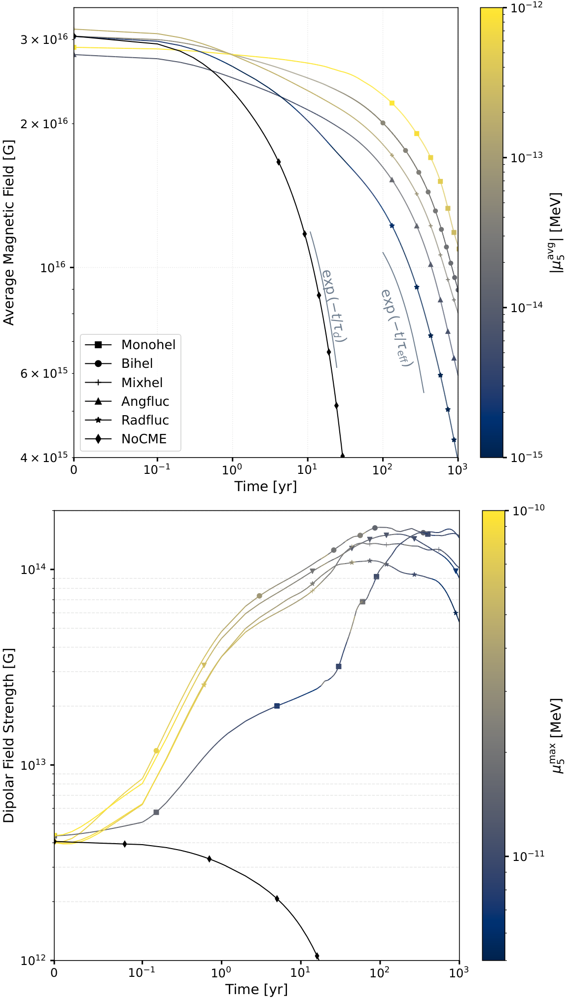
图注：Magnetic field evolution over the first $10^3$ years. The left panel shows the volume-averaged magnetic field, while the right panel shows the mean dipolar magnetic field. The simulation runs are represented by solid lines with distinct markers (as in Figure~\(\ref{fig: conservation}).\) In the left panel, the colorbar corresponds to the average chiral chemical potential, $\mu_5^{\rm avg}$, while in the right panel it corresponds to the maximum chiral chemical potential, $\mu_5^{\rm max}$. The \(\texttt{NoCME}\) run is shown in black (with diamond markers), as it does not include the CME.
对应解读：建议重点查看的图表第2项；关键图表逐图导读图2；模型输出量中的偶极分量随时间增长曲线。
入选理由：这张图直接给出前1000年体平均磁场和平均偶极磁场的时间演化，并用颜色标示手征化学势，最能检验非螺旋或不同螺旋度初态是否能在几十年内生成磁星级偶极场，以及增长、饱和、后期衰减是否分离清楚。它是支撑论文核心结论的首要图。
来源与置信度：\(arxiv_source\)；high；\(arxiv_source\) / apssamp.tex:figure[6]
Fig05
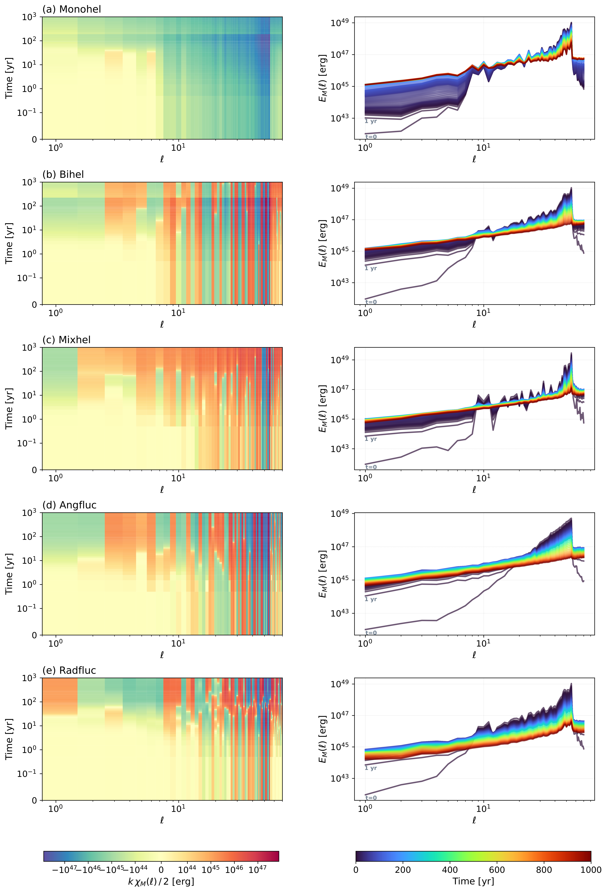
图注：Magnetic helicity and energy spectra for the five simulations: (a) \(\texttt{Monohel},\) (b) \(\texttt{Bihel},\) (c) \(\texttt{Mixhel},\) (d) \(\texttt{Angfluc},\) and (e) \(\texttt{Radfluc}.\) The left column shows the magnetic helicity spectrum $k\,\chi_M(\ell,t)/2$ as a function of spherical harmonic degree $\ell$ and time, with color indicating the helicity amplitude. The right column shows the magnetic energy spectrum $E_M(\ell)$ versus $\ell$ at different times, with color encoding time.
对应解读：建议重点查看的图表第4、5、6项；关键图表逐图导读图5和图6；关于尺度间能量转移和后期分支的讨论。
入选理由：该图同时展示五个模型的磁螺旋度谱随时间变化以及磁能谱随多极阶数的演化，能够判断能量是否向低阶大尺度模态迁移、不同初始拓扑是否产生不同螺旋度重分布，并可区分稳定演化与通过手征反常继续衰减的路径。
来源与置信度：\(arxiv_source\)；high；\(arxiv_source\) / apssamp.tex:figure[5]
Fig04
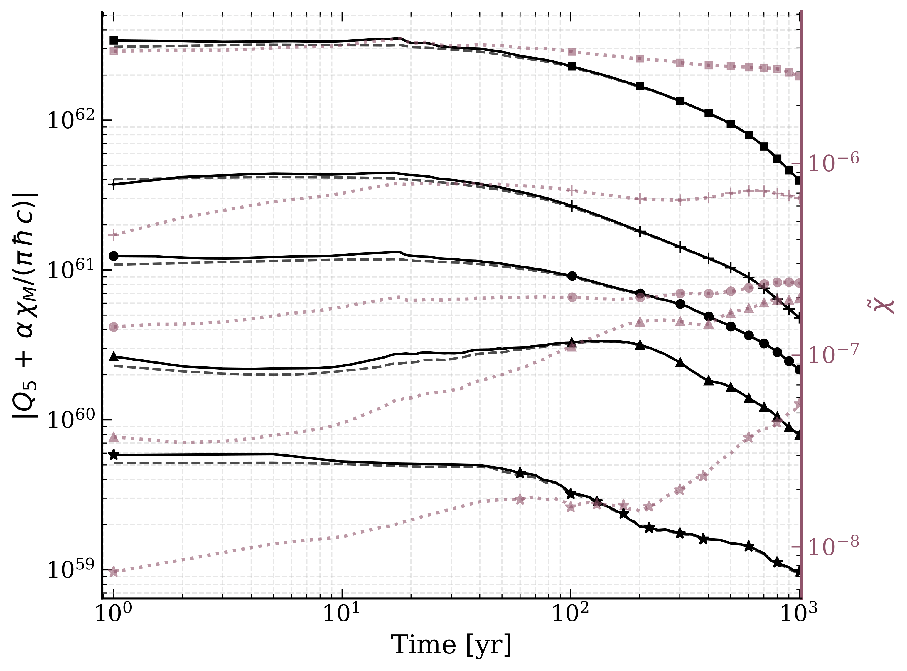
图注：Evolution of helicity-related quantities. The left y-axis shows the generalized helicity (Eq.~\(\ref{eq: modified helicity conservation}),\) $|Q_5 + \frac{\alpha}{\pi\,\hbar\,c}\,\chi_M|$ (solid lines), together with the losses due to the spin-flip term, $ |\Gamma_5 \, \Delta t|$ (dashed lines). The right y-axis shows the dimensionless fractional helicity, $\tilde{\chi}$ (dots). Different simulation runs are distinguished by markers: squares (\(\texttt{Monohel}),\) circles (\(\texttt{Bihel}),\) plus signs (\(\texttt{Mixhel}),\) triangles (\(\texttt{Angfluc}),\) and stars (\(\texttt{Radfluc}).\)
对应解读：建议重点查看的图表第4项；关键图表逐图导读图4；模型机制中广义螺旋度守恒、手征不平衡与磁螺旋度交换的段落。
入选理由：这张图展示广义螺旋度、spin-flip损失项和分数螺旋度的演化，是验证CME是否通过手征反常交换而非单纯数值耗散驱动的关键诊断量。它能支持日报中关于N5与磁螺旋度互补变化、以及不同模型螺旋度命运差异的解读。
来源与置信度：\(arxiv_source\)；high；\(arxiv_source\) / apssamp.tex:figure[4]
Fig03

图注：Schematic representation of the initial local magnetic helicity $\chi$, normalized by its maximum absolute value, for the \(\texttt{Monohel},\) \(\texttt{Bihel},\) \(\texttt{Mixhel},\) and \(\texttt{Angfluc}\) setups, from left to right.
对应解读：建议重点查看的图表第1项；关键图表逐图导读图1；关于不同初始螺旋度配置和局域螺旋结构的说明。
入选理由：该图直接比较Monohel、Bihel、Mixhel和Angfluc初始局域磁螺旋度分布，最适合说明总螺旋度与局域螺旋结构不能混为一谈，也是理解“无净螺旋度初态仍可触发CME”的基础。
来源与置信度：\(arxiv_source\)；high；\(arxiv_source\) / apssamp.tex:figure[3]
Fig07
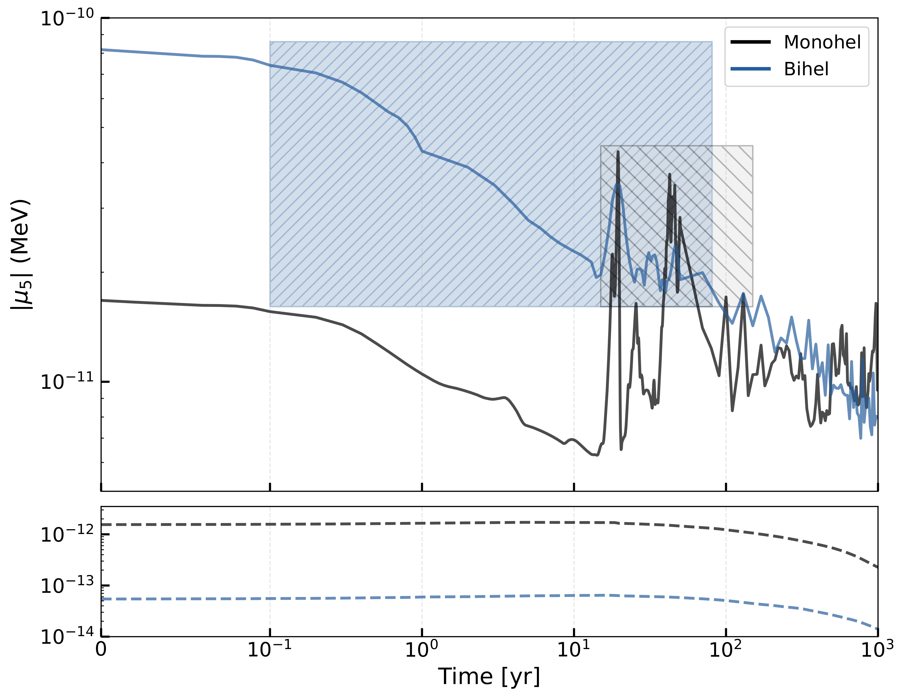
图注：Time evolution of the absolute value of the mean (lower panel, dashed lines) and maximum (upper panel, solid lines) of $\mu_5$ for the \(\texttt{Monohel}\) (black) and \(\texttt{Bihel}\) (blue) runs. The shaded regions indicate the time intervals during which the CMI is active in each case.
对应解读：建议重点查看的图表第3项；关键图表逐图导读图3；关于μ5最大值、CMI触发区间和阈值行为的讨论。
入选理由：虽然它不是完整的μ5参数扫描图，但它给出Monohel和Bihel运行中平均及最大μ5的时间演化，并用阴影标出CMI活跃阶段，是候选图中最接近阈值和触发条件诊断的图，可辅助判断μ5max在不稳定性启动中的作用。
来源与置信度：\(arxiv_source\)；high；\(arxiv_source\) / apssamp.tex:figure[7]
Fig09
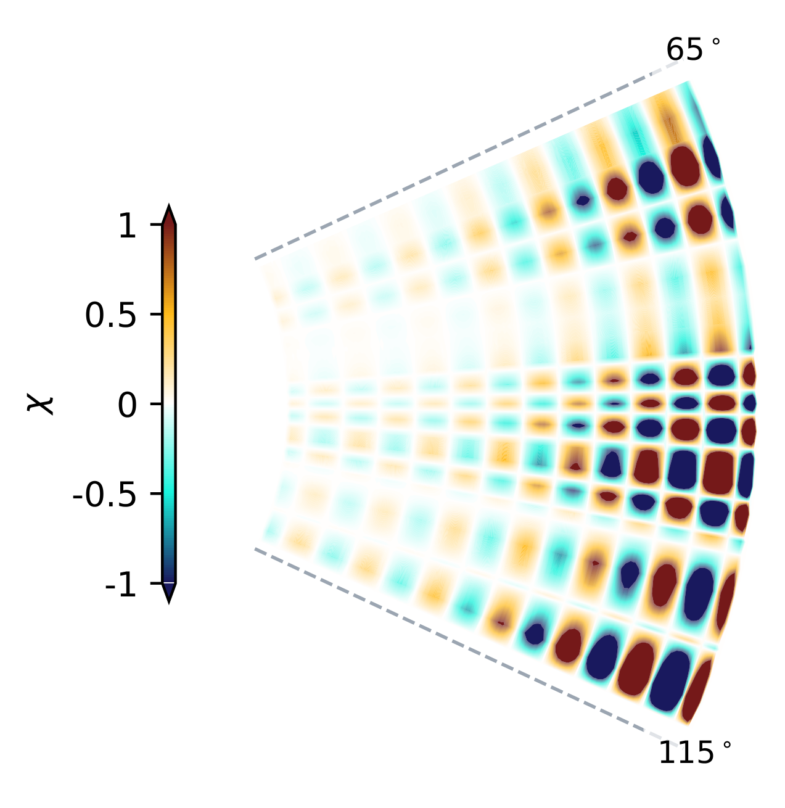
图注：Meridional profile of the initial local magnetic helicity $\chi$, normalized by its maximum absolute value, for the \(\texttt{Radfluc}\) run in the angular interval $65^\circ \leq \theta \leq 115^\circ$. The crustal region is shown with a radial magnification factor of 8 for clarity.
对应解读：建议重点查看的图表第1项和第6项；关于Radfluc模型局域螺旋度分布及后期命运依赖初始螺旋度分布的讨论。
入选理由：这张图补充展示Radfluc运行的初始局域磁螺旋度剖面，弥补Fig03未包含Radfluc空间结构的不足。它有助于解释为什么不同局域螺旋度分布会导致不同的CME触发和后期演化分支，但科学覆盖面低于时间演化和谱图。
来源与置信度：\(arxiv_source\)；high；\(arxiv_source\) / apssamp.tex:figure[9]
强相关工作
这篇文章与 Dehman & Pons 2025 的前序工作直接相连：前者说明在有净磁螺旋度初态下 CME 可产生磁星级偶极场，本文则检验这一机制是否能在更一般、甚至全局无净螺旋度的初态下成立。检索时可用关键词 “chiral magnetic effect magnetars”, “magnetic helicity neutron stars”, “chiral anomaly neutron star magnetic field”, “Dehman Pons magnetar CME”。
基础理论上，它与早期关于手征磁效应、宇宙学磁场和高密度等离子体反常 MHD 的研究同源。这些工作共同关注 \(\mu_5\)、磁螺旋度和磁能谱之间的转换。不同的是，磁星问题更强调高电导、强引力致密星内部、长时间欧姆演化和外部偶极场观测约束。
潜在张力来自两方面：一是微观手征不平衡在中子星物质中是否能维持足够长时间，手征翻转和碰撞过程可能快速耗散 \(\mu_5\)；二是传统磁星形成模型，如快速旋转发电机或原初强场模型，是否已经足够解释观测群体。本文并不直接排除这些机制，而是提供了一个可与它们竞争或共存的内部拓扑演化通道。
相似工作：
- https://arxiv.org/abs/2605.08068
基础理论 / 方法工作：
- https://doi.org/10.1103/PhysRevD.22.3080
- https://doi.org/10.1103/PhysRevD.78.074033
- https://doi.org/10.1103/PhysRevLett.80.3185
相反观点 / 张力线索：
（未提供）
4. Advance warning of $γ$-ray blazar flares from \textit{Fermi}-LAT light curves: a strictly causal machine-learning backtest
- 来源：arXiv / astro-ph.HE
- 链接：https://arxiv.org/abs/2605.07680v1
- 作者：Zahir Shah, Sikandar Akbar
- 评分：novelty 6/10，importance 5/10，relevance 8/10，final 7.35/10
- 推荐理由：Relevant Fermi-LAT gamma-ray blazar flare-forecasting method with emphasis on strictly causal backtesting and leakage control. Potentially useful for time-domain high-energy astronomy, though demonstrated on one target with limited trigger performance and likely needs broader validation.
中文题目：用严格因果机器学习从 Fermi-LAT 光变曲线提前预警伽马射线耀变体耀发
做了什么：这篇文章问的是：长期 \(\textit{Fermi}-LAT\) 伽马射线光变曲线中，是否存在耀变体耀发到来前的可预测信号。作者以 3 天分箱 LAT 光变曲线为输入，用 Bayesian Blocks 标记耀发区间，再从每个 365 天 trailing window 中提取 42 个变异性特征，训练两个严格因果模型：WATCH 预测未来 90 天是否会有耀发活动，TRIGGER 预测未来 45 天是否会出现新耀发起点。所有标准化、校准、阈值选择和验证都只使用 MJD 60000 之前的数据，避免时间泄漏。对 FSRQ 4FGL J1048.4+7143 的回测显示，多项式逻辑回归给出最好的 WATCH 表现，ROC AUC=0.891，AP=0.396，置换检验 \(p_{\rm perm}=0.006\)，在保留测试集中召回率 0.86；但 TRIGGER 还不能可靠给出耀发起点预警。WATCH 状态在两次保留耀发前出现，最终告警分别提前 4.5 和 2.5 天，更宽的活跃预警期可提前约 88.5 和 72.5 天。
为什么重要：耀变体伽马射线耀发是多波段和多信使观测最需要提前调度的目标之一，但真正有用的预警必须在耀发明显上升之前发出，并且不能用未来信息训练或调参。本文的重要性不在于提出最复杂的机器学习模型，而在于做了严格因果回测：训练、归一化、校准和阈值选择都限制在时间切分点之前。这使得结果更接近真实在线预警系统，而不是常见的事后分类。
理论 / 观测 / 仪器方法价值：对观测而言，文章提供了一套可部署到 Fermi-LAT 长期监测数据上的预警流程，尤其适合触发光学、射电、X 射线、中微子或甚高能伽马射线随访。对方法而言，它强调了时间序列天文机器学习中最容易被低估的问题：temporal leakage。对理论而言，若耀发前几十天的变异性特征确实可预测，说明喷流耗散区在大耀发之前可能经历可观测的长期蓄能或不稳定性发展，而非完全随机瞬态。
为什么应该关注：如果你从事耀变体监测、Fermi-LAT 数据分析、多波段 ToO 触发或时域机器学习，这篇文章值得关注。它给出一个现实的基线：WATCH 型“进入高风险状态”比精确 TRIGGER 型“新耀发马上开始”更容易实现。这个区分很重要，因为观测资源调度往往不需要秒级或日级精确起点，只需要提前知道哪些源进入值得密集监测的状态。
展开详细解读：文章讲解、背景、理论、重点章节、图表与相关工作
文章详细讲解
科学问题：耀变体，尤其是 FSRQ，在伽马射线波段表现出强烈非平稳变异和偶发大耀发。传统上，耀发常在显著增亮后才被识别，此时许多早期物理信息已经错过。本文要回答的是：在耀发尚未明显到来之前，过去一年左右的 LAT 光变曲线是否包含可统计利用的前兆信息？同时，机器学习模型是否能在严格避免未来信息泄漏的条件下保持预测能力？
作者怎么做：作者使用 3 天分箱的 \(\textit{Fermi}-LAT\) 光变曲线，并用 Bayesian Blocks 自动识别耀发区间。随后，他们在每个时间点只取此前 365 天的 trailing window，计算 42 个变异性特征，构成监督学习样本。任务被拆成两个层级：WATCH 判断未来 90 天内是否会出现耀发活动，偏向“风险状态识别”；TRIGGER 判断未来 45 天内是否会出现新的耀发起点，偏向“精确触发”。为了扩大训练信息，目标源 FSRQ 4FGL J1048.4+7143 之外还使用了 13 个明亮耀变体作为辅助训练源。
关键结果：在逻辑回归、多项式逻辑回归和随机森林中，多项式逻辑回归的 WATCH 回测最强，ROC AUC=0.891，average precision=0.396，block-permutation 检验 \(p_{\rm perm}=0.006\)。在选定阈值下，它找回保留 WATCH 集中 21 个正样本窗口中的 18 个，召回率 0.86。对 TRIGGER 任务，该模型也给出最好的排序性能，AUC=0.770，AP=0.123，但还不足以形成可靠的新耀发起点预警。两个保留耀发事件中，WATCH 最终告警分别提前 4.5 和 2.5 天；若看更宽的 WATCH-active 连续期，开始时间可提前 88.5 和 72.5 天。
局限和下一步：样本仍然很小，真正独立的保留耀发事件只有少数，AP 也受类别极不平衡限制。WATCH 成功不等于 TRIGGER 成功，说明模型能识别长期高风险状态，但难以精确定位耀发起点。下一步需要在更多源、不同类型耀变体、不同分箱尺度和实时 LAT 分析链上验证，并把多波段信息、物理状态变量或贝叶斯在线更新纳入模型。
背景知识
耀变体是喷流几乎指向观测者的活动星系核，辐射受相对论性 beaming 强烈放大。FSRQ 通常有强外部辐射场和明显发射线，伽马射线辐射可能来自喷流电子通过同步自康普顿或外康普顿过程散射低能光子。耀发则可能对应粒子加速增强、磁重联、冲击、喷流结构变化或多区辐射叠加。
\(\textit{Fermi}-LAT\) 从 2008 年以来持续巡天，为耀变体提供了十几年尺度的 GeV 光变曲线。这种长期、近似均匀的监测非常适合研究非平稳变异、耀发统计和预警模型。但 LAT 光变曲线存在低计数泊松噪声、曝光变化、背景建模、上限处理和分箱选择等问题，直接把机器学习套上去容易得到看似漂亮但不可实时复现的结果。
为什么现在值得重新看？多信使和多波段时域天文学越来越依赖提前调度。伽马耀发若能提前数天到数十天预警，可以触发光学偏振、VLBI、X 射线、TeV Cherenkov 望远镜和中微子搜索。与此同时，机器学习在天文时域数据中很流行，但不少工作存在时间泄漏：例如用全数据集标准化、用未来耀发信息调阈值、随机打乱时间窗口做交叉验证等，这会显著高估真实预警性能。
常见误区之一是把“事后识别耀发”当成“提前预测耀发”。如果模型看到已经升高的光变点或使用包含未来的窗口，它做的只是分类，不是预警。另一个误区是只报告 ROC AUC；在耀发预警这种正样本稀少的问题中，average precision、召回率、误警率、告警提前量和事件级成功率同样关键。
基础理论 / 方法脉络
从物理上看，耀变体光变曲线可被视为喷流内部随机过程、长期状态变化和突发耗散事件的叠加。若耀发完全由无记忆泊松过程触发，过去一年的光变统计不应提供强预测力；若耀发前存在蓄能、湍流增强、基线抬升、变异性变大或时间相关结构，那么 trailing window 特征可能捕捉到风险状态。
Bayesian Blocks 是一种把非均匀时间序列分段为若干常值区间的方法，常用于寻找天文光变中的变化点。它比固定阈值更适合非平稳光变，因为耀发区间可由数据自适应定义。但分段算法本身也有超参数，例如 false positive prior 或惩罚项；若这些参数用全时间轴调优，也可能造成泄漏。本文强调在时间切分前完成所有选择，是方法上的关键。
机器学习部分可以理解为特征工程加概率分类。365 天窗口内的 42 个特征可能包括均值、方差、偏度、峰度、分位数、结构函数类指标、fractional variability、最大/最小通量、近期趋势或 Bayesian Block 派生量。逻辑回归提供线性决策边界，多项式逻辑回归允许特征交互，随机森林可捕捉非线性但在小样本和时间相关数据中容易过拟合。
观测和统计上的主要退化包括：耀发定义影响标签，窗口长度影响前兆尺度，3 天分箱可能抹平短时结构，辅助源训练可能引入源间差异，类别不平衡会使高 AUC 与低实用精度并存。对于真实预警，模型概率还必须校准，否则一个分数高低排序好的模型不一定能给出可解释的告警概率。
公式与推导
LAT 光变曲线可写成离散时间序列 \(\{f_i,\sigma_i,t_i\}\)，其中 \(f_i\) 是第 \(i\) 个 3 天 bin 的通量，\(\sigma_i\) 是不确定度。常用变异性量之一是 fractional variability：
其中 \(S^2\) 是窗口内观测通量方差，\(\langle \sigma_i^2\rangle\) 是平均测量误差方差，\(\langle f_i\rangle\) 是平均通量。它试图扣除测量噪声后衡量源的本征相对变异幅度。
监督学习标签可形式化为未来时间窗内是否有耀发。对 WATCH 任务，若当前时刻为 \(t\)，标签可写作：
其中 \(\mathbb{I}\) 是指示函数，\(\mathcal{F}\) 是 Bayesian Blocks 标记出的耀发区间。TRIGGER 类似，但目标是未来 45 天内是否存在新的耀发起点。
逻辑回归把特征向量 \(\mathbf{x}\) 映射为概率：
这里 \(\boldsymbol{\beta}\) 是特征权重，\(\beta_0\) 是截距。多项式逻辑回归将 \(\mathbf{x}\) 扩展为包含二阶或更高阶交互项的 \(\phi(\mathbf{x})\)，即用 \(\boldsymbol{\beta}\cdot\phi(\mathbf{x})\) 替代线性项。
训练通常最小化正则化负对数似然：
第一项惩罚分类概率与标签不一致，第二项为 \(L_2\) 正则化，\(\lambda\) 控制模型复杂度，防止小样本中过拟合。
ROC AUC 衡量随机抽取一个正样本和一个负样本时模型把正样本排得更高的概率：
其中 \(s^+\) 和 \(s^-\) 分别是正、负样本得分。AP 则近似为 precision-recall 曲线下面积：
其中 \(P_n\) 和 \(R_n\) 是第 \(n\) 个阈值处的 precision 与 recall。耀发预警正样本少，AP 往往比 ROC AUC 更能反映实际误警压力。
模型拟合 / 应用方法
本文的模型拟合流程包括标签构建、特征提取、时间切分、训练、校准、阈值选择和保留集评估。关键约束是严格因果：对 MJD 60000 之后的 held-out 数据，任何标准化均值方差、概率校准函数、模型超参数和告警阈值都不能利用这些未来数据。这个设计比随机交叉验证更接近真实在线预警。
参数估计方面，逻辑回归和多项式逻辑回归通过最大似然或正则化最大似然学习权重；随机森林通过多棵决策树投票得到分类分数。由于窗口高度重叠，样本并非独立同分布，普通打乱置换会高估显著性。因此文章使用 block-permutation 概率评估 WATCH 性能，尽量保持时间相关结构。
系统误差主要来自四类：第一，Bayesian Blocks 耀发标签的定义会改变正负样本边界；第二，辅助训练源与目标源的统计性质不同，可能带来源域偏移；第三，LAT 通量误差、低显著性 bin 和曝光变化会污染特征；第四，阈值选择涉及召回率和误警率权衡。实际应用中，残差应按事件级别检查：模型是否只在耀发已经开始后才报警？是否在长期高基线阶段持续误报？告警概率是否在非耀发高变异期也异常升高？
从应用看，WATCH 模型适合生成“候选源进入高风险状态”的列表，用于增加监测频率；TRIGGER 模型若未来改进，则可用于更昂贵的 ToO 触发。本文结果提示现阶段应谨慎使用精确起点预警，而把 WATCH 作为优先级排序工具更现实。
重点章节 / 结果段落怎么读
-
数据和样本：先看 3 天分箱 LAT 光变曲线如何构建，目标源 4FGL J1048.4+7143 的时间覆盖、数据质量和 13 个辅助训练源的选择标准。辅助源是否与目标 FSRQ 具有相似红噪声和耀发统计，会影响泛化。
-
耀发标记：重点读 Bayesian Blocks 的设置、耀发区间定义和 flare onset 的定义。WATCH 和 TRIGGER 的标签完全依赖这里，若标签过宽或过窄，会改变提前量和模型评价。
-
特征工程：检查 365 天 trailing windows 和 42 个变异性特征。读者应关注这些特征是否只使用当前时刻以前的数据，以及窗口重叠造成的样本相关性如何处理。
-
严格因果训练和验证：这是本文方法核心。要确认 scaling、calibration、threshold selection、model selection 是否全部在 MJD 60000 前完成。任何一步使用 held-out 数据都会让预警性能失真。
-
WATCH 结果：关注 ROC AUC、AP、召回率、置换检验和两次保留耀发的告警时间线。WATCH 是本文最有说服力的任务，也是最接近实际可用的结论。
-
TRIGGER 结果和讨论：读者应仔细看为什么 AUC 尚可但没有可靠 pre-onset trigger。这里能帮助判断未来改进应靠更多数据、更短分箱、多波段信息还是不同模型结构。
建议重点查看的图表
-
目标源完整 LAT 光变曲线与 Bayesian Blocks 分段：看耀发标签是否符合直觉，是否有边界模糊的弱耀发。
-
训练/验证/保留时间切分图：确认 MJD 60000 切分点，以及所有评估事件位于真正未见过的未来区间。
-
WATCH ROC 和 precision-recall 曲线：ROC AUC=0.891 很好，但 AP=0.396 才更能反映类别不平衡下的实际告警价值。
-
TRIGGER ROC 和 PR 曲线：检查 AUC=0.770 与 AP=0.123 的差异，理解为什么排序能力不等于可用触发器。
-
告警分数随时间变化图：最关键。看模型分数是否在耀发前上升，最终告警是否确实早于 flare onset，而不是耀发开始后才跨阈值。
-
特征重要性或模型系数图：看哪些变异性特征驱动 WATCH 预测，判断它们是否有物理意义，还是可能反映标签构造偏差。
-
置换检验或空模型对比图：检查 \(p_{\rm perm}=0.006\) 的统计显著性是否来自少数事件，block 长度选择是否影响结论。
-
误报案例表：实际部署时误报成本很重要，应看高分但无耀发窗口集中在哪些光变状态。
关键图表逐图导读
图 1：完整光变曲线图通常横轴为 MJD，纵轴为 3 天 bin 的伽马射线通量或能量通量，可能叠加 Bayesian Blocks。数据点显示观测通量和误差，分段线显示自适应块。读图时要看耀发标签是否在通量显著升高前后合理截断；若耀发区间太宽，WATCH 任务会变得容易但提前量解释会复杂。
图 2：时间切分和滑动窗口示意图应展示 365 天 trailing window、未来 90 天 WATCH 标签和未来 45 天 TRIGGER 标签。横轴为时间，窗口只应位于预测时刻之前，标签位于之后。读图陷阱是混淆特征窗口和标签窗口；任何跨越当前时刻的特征都会造成泄漏。
图 3：WATCH ROC 曲线横轴为 false positive rate，纵轴为 true positive rate，模型曲线应明显高于对角线。AUC=0.891 表明排序能力强，但实际观测调度还要看所选阈值下每天或每源的误警频率。
图 4：WATCH precision-recall 曲线横轴为 recall，纵轴为 precision。由于正样本少，AP=0.396 已可能有实用价值，但 precision 的绝对值要结合告警持续时间理解。若高 recall 区域 precision 快速下降，说明模型适合宽松监视而不适合昂贵 ToO。
图 5：TRIGGER 的 ROC/PR 曲线应显示 AUC 尚有排序信息，但 AP 很低。读图时不要只引用 AUC=0.770；对罕见新耀发起点，低 AP 意味着高分窗口中真正 onset 的比例仍低，因此难以产生可靠 pre-onset alert。
图 6：告警时间线图最能说明因果预警是否成立。横轴为 MJD 或相对 flare onset 的天数，纵轴为模型 WATCH 分数，水平线为告警阈值，阴影为耀发区间。关键看分数跨阈值点是否早于 onset，以及是否存在长时间连续高分导致告警含义变成“高风险季节”而非“几天内爆发”。
图 7：特征重要性或系数图若存在，横轴为特征名称，纵轴为标准化系数、Gini importance 或 permutation importance。读图时要警惕相关特征成组出现：单个系数不一定有独立物理意义，但若近期变异性、偏度、峰值或趋势类特征整体重要，说明耀发前光变状态确有统计变化。
论文原图 / 可嵌入图片
Fig05
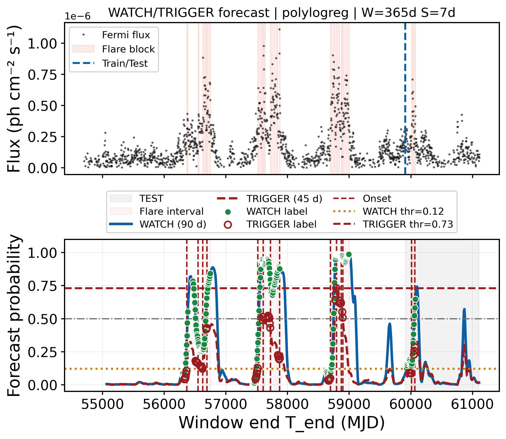
图注：PLR alert-state timeline. The top panel shows the 3-d binned \(\fermi\\) flux as black points; salmon shading marks FULL-BB flare intervals, and the navy dashed vertical line marks the train/test boundary at $T_{\rm boundary}=\mathrm{MJD}\,59910$. The lower panel shows the causal seven-window trailing means of the WATCH score (solid blue) and the TRIGGER score (dark-red dashed). Filled green circles mark windows that are WATCH-positive under the FULL-BB scoring labels, while open dark-red circles mark windows that are TRIGGER-positive under the onset-based scoring labels. Dark-red dashed vertical lines mark FULL-BB flare onsets, the pale navy background marks the held-out test stream, the orange dotted horizontal line is the WATCH threshold ($\tau_{\rm W}=0.12$), the red dashed horizontal line is the TRIGGER threshold ($\tau_{\rm T}=0.73$), and the grey dash-dotted horizontal line is a visual probability guide at $\hat{p}=0.50$. Lead-time values quoted in the text are computed separately from the raw, unsmoothed probabilities using the primary 90-d look-back window and the two-window persistence requirement.
对应解读：对应“建议重点查看的图表”第5项和“关键图表逐图导读”图6：告警分数随时间变化图；也直接支撑模型拟合段落中关于 WATCH/TRIGGER 阈值、flare onset 前告警和 held-out 因果评估的讨论。
入选理由：这是三张候选图中最能检验论文核心结论的图：同时给出目标源 3 天 LAT 光变曲线、FULL-BB 耀发区间、训练/保留边界、WATCH 与 TRIGGER 分数、对应阈值以及 flare onset 标记。日报强调的关键问题是模型是否在耀发开始前跨越阈值，而不是事后响应；Fig05 正好能直接检查 PLR 模型的 WATCH 提前告警、TRIGGER 未能可靠触发以及 held-out 区间中的因果表现。
来源与置信度：\(arxiv_source\)；high；\(arxiv_source\) / prediction.tex:figure[5]
Fig01
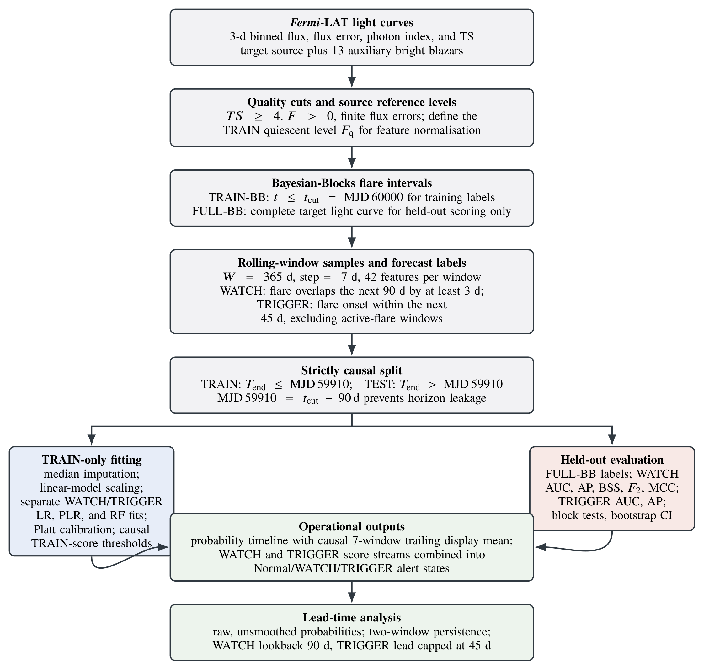
图注：Schematic of the strictly causal blazar flare-forecasting pipeline. The light curves first pass through quality cuts, and the TRAIN-only quiescent level $F_{\rm q}$ is defined for later normalization of flux-dependent features. Bayesian Blocks are then computed in two ways: TRAIN-BB uses only data up to $t_{\rm cut}=\mathrm{MJD}\,60000$ for training labels, while FULL-BB is used only to score the held-out target stream. Rolling 365-d windows with a 7-d step are assigned two future targets: a WATCH label based on flare overlap within the next 90 d and a TRIGGER label based on flare onset within the next 45 d. The train/test boundary is placed at $T_{\rm boundary}=t_{\rm cut}-90\,{\rm d}=\mathrm{MJD}\,59910$, so that no training WATCH horizon reaches into the held-out period. Each classifier family is then fitted separately for WATCH and TRIGGER, calibrated on a trailing TRAIN tail, and thresholded using causal TRAIN-score sequences before the fixed pipeline is evaluated on the held-out windows.
对应解读：对应“建议重点查看的图表”第2项和“关键图表逐图导读”图2：训练/验证/保留时间切分与滑动窗口示意；也支撑模型拟合段落中严格因果、MJD 60000、365 天 trailing window、90 天 WATCH 标签和 45 天 TRIGGER 标签的说明。
入选理由：该图是理解本文方法可信度的基础：它明确展示 TRAIN-BB 与 FULL-BB 的区分、MJD 60000 cutoff、\(T_boundary=MJD\) 59910、365 天历史窗口、未来 90 天 WATCH 标签和未来 45 天 TRIGGER 标签。日报反复强调避免 temporal leakage，此图比单纯性能图更能说明回测是否严格因果。
来源与置信度：\(arxiv_source\)；high；\(arxiv_source\) / prediction.tex:figure[1]
Fig03
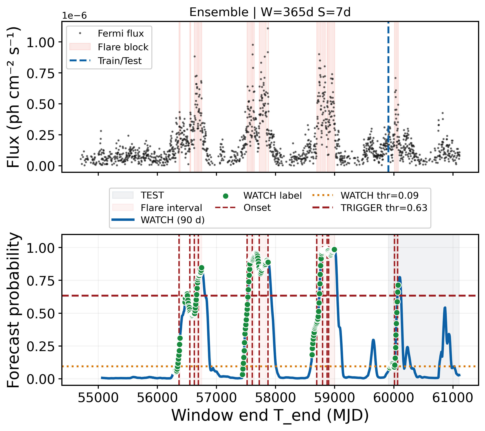
图注：WATCH-only soft-voting ensemble for the target source. For each rolling window, the raw calibrated WATCH probabilities from logistic regression, polynomial logistic regression, and random forest are averaged to form the ensemble WATCH probability. The top panel shows the 3-d binned \(\fermi\\) flux; the salmon-shaded bands mark the FULL-BB flare intervals, and the navy dashed vertical line marks the train/test boundary at $T_{\rm boundary}=\mathrm{MJD}\,59910$. The lower panel shows the ensemble WATCH probability after applying a causal seven-window trailing mean for visual clarity. Filled green circles mark the WATCH-positive FULL-BB scoring windows, dark-red dashed vertical lines mark FULL-BB flare onsets, and the pale shaded region marks the held-out test interval. The orange dotted horizontal line shows the mean WATCH threshold of the three component models, $\langle\tau_{\rm W}\rangle=(0.06+0.12+0.10)/3=0.093$. The red dashed horizontal line shows the corresponding mean of the three individual TRIGGER thresholds, $\langle\tau_{\rm T}\rangle=(0.82+0.73+0.35)/3=0.633$, and is included only as a visual guide; no separate ensemble TRIGGER probability is constructed in this work.
对应解读：对应“建议重点查看的图表”第1项和第5项，以及“关键图表逐图导读”图1/图6中关于完整 LAT 光变曲线、Bayesian Blocks 耀发区间和 WATCH 分数时间演化的讨论。
入选理由：Fig03 将目标源完整光变曲线、FULL-BB 耀发阴影、训练/测试边界、WATCH-positive 窗口、flare onset 和 ensemble WATCH 阈值放在同一时间轴上，适合检查耀发标签是否合理以及高风险状态是否在 held-out 耀发前出现。虽然日报关键结果主要引用 PLR 单模型，Fig03 是 soft-voting ensemble，和主结论的模型对应性略弱于 Fig05，但仍能补充展示全局光变与标签结构。
来源与置信度：\(arxiv_source\)；high；\(arxiv_source\) / prediction.tex:figure[3]
强相关工作
这篇文章位于两个研究传统的交叉点：一是 Fermi-LAT 耀变体长期监测和耀发统计，二是天文时域机器学习预警。类似工作常尝试用光变曲线、谱指数、多波段数据或深度学习预测 AGN 活动状态，但许多研究更接近事后分类或使用随机交叉验证。本文的区别是突出 strictly causal backtest，应检索关键词 “Fermi LAT blazar flare prediction”, “Bayesian Blocks blazar flares”, “causal machine learning time series astronomy”, “temporal leakage astrophysics machine learning”。
从物理解释看，若 WATCH 状态可提前几十天出现，它与喷流长期蓄能、磁重联前兆、冲击形成、外部辐射场变化或喷流几何摆动有关。相反观点是耀变体光变高度随机，红噪声和选择效应可能制造表面预测力。本文通过 block-permutation 检验减轻这一担忧，但由于事件数仍少，尚不能证明所有耀变体都存在稳定前兆。
与多信使研究的关系也值得注意。若某些高能中微子候选事件与耀变体高态相关，WATCH 型预警可帮助提前安排高能望远镜和中微子方向搜索窗口。不过 TRIGGER 仍不可靠说明：用 GeV 光变曲线精确预测耀发起点仍很难，未来可能需要加入光学偏振、射电核心活动、谱硬化或 VLBI 结构变化等额外先验。
相似工作：
- https://arxiv.org/abs/2605.07680
- https://arxiv.org/abs/1509.03852
基础理论 / 方法工作：
- https://doi.org/10.1088/0004-637X/764/2/167
- https://doi.org/10.1088/0004-637X/722/1/520
- https://doi.org/10.3847/1538-4357/aa6c65
相反观点 / 张力线索：
（未提供）
5. A Changing-Look Seyfert Discovered by eROSITA Reveals a Two-Component Broad-Line Region
- 来源：arXiv / astro-ph.HE
- 链接：https://arxiv.org/abs/2605.07965v1
- 作者：Alex Markowitz, Mirko Krumpe, David Homan, Bożena Czerny, Mariusz Gromazdki, Hartmut Winkler, Joern Wilms, Steven Hämmerich
- 评分：novelty 6/10，importance 6/10，relevance 6/10，final 7.00/10
- 推荐理由：Changing-look Seyfert caught by eROSITA with multiwavelength follow-up, arguing for intrinsic accretion-rate changes rather than obscuration and suggesting a two-component BLR. Relevant through X-ray AGN variability/accretion physics, but less central to gamma-ray/cosmic-ray interests and mainly a detailed case study.
中文题目：eROSITA 发现的变脸赛弗特星系：HE 1237-2252 揭示双组分宽线区
做了什么：这篇论文研究了赛弗特活动星系核 HE 1237-2252 的一次强烈“变脸”事件：eROSITA 监测到其软 X 射线通量在 18 个月内骤降约 17 倍，随后作者组织了 X 射线、光学光谱和多波段测光跟进，捕捉到它在约 3 年内吸积率相对 Eddington 值提高约 7 倍并重新变亮的过程。光学宽 Hβ 线显示，该源曾从 1.0–1.2 型变为 1.8 型，又在亮度恢复时约 3 个月内回到 1.0 型；宽 Hβ 积分线通量在两次转变中变化约 4–6 倍。作者把 Balmer 宽线轮廓分解为一个位于约 27±3 光日、近似维里化的宽高斯组分，以及一个更靠内、半径大于约 5 光日的双峰盘线组分；后者在连续谱变亮时相对贡献增加。X 射线谱未显示明显遮蔽，红外连续谱也同步变暗，支持这是内禀吸积率暂停和恢复，而不是视线方向尘气遮挡造成的假变脸。
为什么重要：变脸 AGN 的核心争议是：宽线消失和恢复到底是吸积流本身发生了快速变化，还是只是遮蔽云团掠过视线？这篇工作的重要性在于，它把 eROSITA 的 X 射线巡天触发、多波段连续谱、X 射线谱和光学宽线轮廓演化合在一起，给出了较强证据指向内禀吸积率变化。同时，作者不是只报告“宽线出现/消失”，而是进一步提出宽线区至少包含两个物理和几何性质不同的发射组分：较外侧的近维里化气体和较内侧的盘状双峰发射区。这对理解宽线区结构如何响应吸积态变化很关键。
理论 / 观测 / 仪器方法价值：对理论而言，这个源提供了检验吸积盘热/冷前沿、暖前沿传播、X 射线日冕几何变化与电离连续谱覆盖因子变化的时间域样本。对观测而言，它展示了 X 射线巡天在发现低态、触发光学跟进方面的价值，也说明单次光谱分类不足以刻画 AGN 类型。对方法而言，论文把光变、谱能量分布、X 射线吸收约束和宽线轮廓分解结合，用来区分遮蔽模型和内禀吸积变化模型，并把宽线区半径、线宽和轮廓形状联系到可观测的几何结构。
为什么应该关注：如果你关心 AGN 吸积盘如何在几年尺度上重构、宽线区是不是单一云团群、或者 eROSITA/LSST 等时域巡天能带来什么新物理，这篇文章都值得看。它提醒我们：变脸 AGN 不只是分类标签变化，而是吸积盘、电离连续谱、日冕和宽线区共同响应的实验室。尤其是双组分宽线区的证据，会影响我们如何使用单历元宽线估计黑洞质量、如何解释双峰发射线，以及如何把 reverberation mapping 的半径同真实几何结构对应起来。
展开详细解读：文章讲解、背景、理论、重点章节、图表与相关工作
文章详细讲解
科学问题：HE 1237-2252 是一个赛弗特 AGN，eROSITA 发现它的软 X 射线通量在 18 个月内下降约 17 倍，幅度和时间尺度都足以怀疑发生了 changing-look 事件。changing-look AGN 的核心问题不是简单的“谱型变了”，而是要判断宽 Balmer 线和连续谱的变化来自中央引擎吸积率变化，还是来自沿视线的气体/尘埃遮挡。前者意味着吸积盘和电离源在几年甚至更短尺度上发生状态转换，后者则更多是几何遮蔽效应。
作者怎么做：论文利用 eROSITA 的 X 射线监测作为触发，开展后续多波段测光、X 射线光谱和光学光谱观测。光学谱用于追踪 Hβ 等 Balmer 宽线的强度、轮廓和 AGN 亚型；X 射线谱用于检查是否存在足以解释暗化的吸收柱密度或复杂遮蔽；红外连续谱用于判断热尘埃是否也经历了真实的照明下降。作者还对宽 Balmer 线轮廓做分解，把总轮廓拆为一个宽高斯组分和一个双峰盘线组分，并比较二者随连续谱变亮的相对贡献。
关键结果：HE 1237-2252 在 2002 年表现为 1.0–1.2 型，低态期间变为约 1.8 型，随后在亮度恢复时约 3 个月内回到 1.0 型。宽 Hβ 线通量在转变中变化约 4–6 倍，而估计的 Eddington 比在 3 年内提高约 7 倍。宽线轮廓可以由两个组分解释：一个半径约 27±3 光日、与维里化气体相容的宽高斯组分；另一个呈双峰结构、类似吸积盘线发射，位置更靠内，半径下限约为 5 光日。连续谱升高时，盘线组分在总宽线中的相对贡献增强，提示内侧宽线区或照明几何在吸积恢复中发生了变化。
局限和下一步：当前证据强烈倾向于内禀吸积率暂停和恢复，而不是遮蔽，但仍受限于采样间隔、历史光谱覆盖、盘线模型的非唯一性以及对极紫外电离连续谱不可直接观测的事实。下一步最有价值的是高 cadence 光谱监测和真正的速度分辨 reverberation mapping，用不同速度通道的时延来检验双峰盘线是否来自旋转盘；同时需要更密集的 X 射线监测来约束日冕尺寸、谱斜率和反射成分是否与宽线区响应同步变化。
背景知识
研究对象是 changing-look AGN，尤其是 Balmer 宽线在几年甚至几个月尺度上显著增强、减弱、消失或重现的赛弗特核。传统 AGN 统一模型把 1 型和 2 型的差异主要归因于观测角度和尘埃环遮蔽，但 changing-look 现象说明至少一部分 AGN 的谱型变化不能仅靠静态几何解释。HE 1237-2252 的价值在于它不是偶然在光学中发现变脸，而是由 X 射线巡天发现中央高能辐射先大幅暗化，再由多波段跟进追踪恢复。
历史上，宽线区通常被看作距离黑洞数光日至数百光日的光电离气体，半径可由 reverberation mapping 测量，并与光度满足经验的半径-光度关系。双峰 Balmer 线则常被解释为来自倾斜 Kepler 吸积盘的线发射，但也可能由双黑洞、双向外流、非轴对称盘结构或多个宽线区组分造成。因此，当一篇论文声称宽线区有“双组分”时，关键不是看拟合是否漂亮，而是看时间变化、线宽、半径和连续谱响应是否共同支持这种解释。
为什么现在值得重新看，是因为 eROSITA、ZTF、ATLAS、ASAS-SN 以及未来 LSST 正在把 AGN 研究推向时域统计样本。过去我们常用单历元光谱给 AGN 分类、估黑洞质量、推 Eddington 比；但 changing-look 源说明这些量可能在几年尺度上大幅移动。X 射线巡天尤其重要，因为它能直接看到内侧吸积流和日冕的变化，帮助区分真实熄火与外部遮挡。
常见误区有三点。第一，把所有变脸都归因于遮蔽是不够的，因为遮蔽很难自然解释红外热尘埃也变暗以及 X 射线谱缺少强吸收。第二，把宽线消失简单理解为宽线区“没了”也不准确；更合理的是电离连续谱下降后，原本存在的气体不再有效发射宽线。第三，双峰线不必然意味着双黑洞，旋转盘线、非轴对称盘扰动和局部照明变化都可以产生双峰轮廓。
基础理论 / 方法脉络
核心物理图像是：中央超大质量黑洞周围的吸积盘产生光学/紫外连续谱，内侧热日冕产生 X 射线，足够高能的电离光子照亮宽线区气体，产生 Hα、Hβ 等宽 Balmer 线。若吸积率下降，电离连续谱减弱，宽线通量随之下降；若下降足够多，1 型 AGN 可能在光学分类上变为 1.8、1.9 甚至 2 型。若是遮蔽，则连续谱和宽线也会变弱，但 X 射线谱通常应出现额外吸收、部分覆盖或强硬化，红外响应也会有不同特征。
关键量包括 X 射线通量变化幅度、光学/UV 连续谱光度、宽 Hβ 积分通量、宽线 FWHM 或线宽二阶矩、Eddington 比、宽线区半径以及不同线轮廓组分的相对贡献。维里化宽线区满足速度越大、半径越小的关系，因此若能估计半径和线宽，就可以检查该组分是否与黑洞引力主导运动一致。盘线组分则更强调 Kepler 旋转和倾角：蓝峰、红峰、峰间距、翼部宽度都携带半径范围和倾角信息。
观测和数据分析逻辑是把多个波段的响应串起来：X 射线低态提示中央高能辐射变化，光学谱型转变显示宽线区响应，红外连续谱下降表明尘埃接收到的总照明也减少。若 X 射线谱没有显示足够大的吸收柱密度，且红外也不是保持稳定或变亮，那么“视线遮蔽”解释就变得不经济。相反，内禀吸积率下降可以同时解释 X 射线、光学宽线和红外热尘埃的协同变暗。
需要注意的退化包括：宽线轮廓分解不是唯一的，高斯组分、Lorentzian 组分、盘线模型和外流组分之间可能互相替代；主连续谱的宿主星系扣除会影响低态下 AGN 光度；X 射线短曝光可能漏掉复杂吸收或快速谱变；红外响应还受尘埃转移函数平滑影响。因此，真正强的结论依赖多证据一致，而不是某一个拟合参数。
公式与推导
可以从 Eddington 比刻画吸积状态变化。Eddington 光度为
其中 \(G\) 是引力常数，\(M_{\rm BH}\) 是黑洞质量，\(m_p\) 是质子质量，\(c\) 是光速，\(\sigma_T\) 是 Thomson 散射截面。Eddington 比定义为
其中 \(L_{\rm bol}\) 是总辐射光度。论文报告该源在恢复阶段 \(\lambda_{\rm Edd}\) 约增加 7 倍，说明变化不是普通小幅闪烁。
宽线区半径常由光度关系或时延思想联系到观测量：
其中 \(\tau\) 是连续谱变化到宽线响应的时间延迟。若气体由黑洞引力主导并近似维里化，则
其中 \(\Delta V\) 是宽线速度宽度，\(f\) 是几何、倾角和运动学修正因子。作者给出的约 27±3 光日高斯组分半径与这种维里化宽线区图像相容。
线发射的基本光电离标度可用电离参数表示：
其中 \(Q_{\rm ion}\) 是超过 13.6 eV 的电离光子数率，\(R\) 是气体到电离源距离，\(n_{\rm H}\) 是氢数密度。若吸积率降低导致 \(Q_{\rm ion}\) 下降，宽线发射效率和线通量都会下降；若吸积率恢复且更多电离光子照到盘线区，盘线组分会增强。
观测到的宽线通量可粗略写成
其中 \(D_L\) 是光度距离，\(j_{\rm line}\) 是局部线发射率，积分覆盖发射体积。这个式子说明线通量变化既可能来自电离源变化，也可能来自气体覆盖因子、密度、几何可见性和遮蔽变化。本文的多波段证据主要用于打破这些退化。
盘线组分的速度尺度来自 Kepler 旋转：
其中 \(i\) 是盘倾角。双峰间距大致反映投影旋转速度，因此内半径越小或倾角越大，峰间距和线翼通常越宽。论文把双峰结构解释为半径大于约 5 光日的 diskline 发射区，重点是其相对贡献随连续谱增强而增加。
模型拟合 / 应用方法
这类工作的拟合通常分三层。第一层是连续谱和宿主星系分解：光学谱中需要扣除星系恒星光、窄线、Fe II 伪连续谱和 AGN 幂律连续谱，否则低态时宽 Hβ 的测量会被宿主成分严重稀释。第二层是发射线轮廓拟合：窄 Hβ 和 [O III] 可用于约束系统红移和窄线宽度，宽 Hβ 则用高斯、多个高斯或物理盘线模型表示。本文的关键拟合是把宽 Balmer 轮廓拆为一个宽高斯维里化组分和一个双峰 diskline 组分，并比较不同历元中二者通量比例。
X 射线谱拟合的核心是检验吸收模型是否必要且是否足够。常见模型包括 Galactic absorption 加上 AGN 幂律、软超量、内禀中性/电离吸收、部分覆盖吸收和反射成分。若要用遮蔽解释 17 倍软 X 射线下降，通常需要较大的柱密度或覆盖因子变化，并会在谱形上留下硬化、边结构或低能截断。论文摘要指出 X 射线谱缺少遮蔽证据，因此后验解释更倾向内禀吸积率下降。
参数估计上，理想做法是对多历元光谱联合拟合，把恒定项如窄线通量、宿主成分、红移和部分仪器校准项共享，把随时间变化的 AGN 连续谱、宽线通量、盘线归一化和 X 射线谱参数设为自由。似然通常可写为各波段数据残差的高斯或 Poisson/C-stat 乘积，再加入校准误差和宿主扣除误差。实际解读残差时，要看宽线翼和双峰峰位是否系统性残留，而不是只看总 \(\chi^2\) 是否改善。
主要退化关系包括：盘线倾角与发射半径可共同改变峰间距；宽高斯和盘线翼部可互相吸收通量；内禀变暗和灰遮蔽在部分光学波段可能相似；尘埃红外响应存在时间平滑，使其不能精确同步指示瞬时光度。实际应用上，这套方法可用于 eROSITA/ZTF/LSST 发现的变脸 AGN 候选体筛选：先用 X 射线谱排查吸收，再用多历元光谱追踪宽线轮廓，最后用红外或 UV 数据判断总照明是否真实变化。
重点章节 / 结果段落怎么读
数据/样本部分应先看 eROSITA 如何发现软 X 射线下降，以及后续 X 射线、光学光谱、多波段测光的时间覆盖。重点是采样是否足以确定“18 个月下降”和“3 个月谱型恢复”，以及不同仪器之间的通量交叉校准如何处理。
光学谱型与宽线测量部分是全文核心之一。读者应关注作者如何定义 Seyfert 1.0、1.2、1.8 等亚型，如何扣除宿主星系和窄线，以及宽 Hβ 积分通量变化 4–6 倍的误差预算。低态下宽线很弱，系统误差往往比形式统计误差更重要。
X 射线光谱分析部分用于区分遮蔽和内禀变化。应重点读吸收柱密度、谱斜率、软 X 射线残差、是否尝试部分覆盖或电离吸收模型，以及这些模型能否在不引入不合理参数的情况下解释通量下降。
宽 Balmer 线轮廓分解部分决定“双组分宽线区”的可信度。读者要看宽高斯组分和 diskline 组分是否在多个历元中稳定出现，盘线参数是否物理合理，组分通量随连续谱变化的趋势是否显著，而不是只看某一历元的最佳拟合图。
讨论部分应关注作者提出的机制：吸积盘中冷/暖前沿传播、吸积率暂停、X 射线日冕物理尺寸变化、以及超过 13.6 eV 电离光子被盘线区截获比例的变化。这里的结论应被视为物理解释框架，而不是已被唯一证明的机制。
建议重点查看的图表
-
X 射线与多波段长期光变曲线：看 eROSITA 软 X 射线通量下降 17 倍的时间位置、后续恢复速度，以及光学/红外是否同向变化。关键是不同波段是否存在合理滞后，而不是要求完全同步。
-
多历元光学光谱对比图：看 Hβ 区域中宽线从强到弱再恢复的形态，尤其低态是否仍有宽翼残留。要检查连续谱归一化和宿主扣除是否影响谱型判断。
-
X 射线谱及残差：看低能端是否有吸收截断、硬化或部分覆盖残差。若无强吸收特征，遮蔽解释会受限。
-
宽 Hβ 轮廓分解图：看总模型、宽高斯、diskline、窄线和 Fe II/连续谱分量如何叠加。重点检查双峰结构是否由真实残差驱动，还是被模型自由度强行拟合出来。
-
宽线组分通量随连续谱或 Eddington 比变化图：看 diskline 相对贡献是否随亮度上升单调增强，误差条是否允许无变化。
-
半径、线宽和维里关系诊断图：若有，应检查 27±3 光日组分是否落在常见 Hβ 半径-光度关系附近，以及 diskline 半径下限是否与线宽相容。
-
红外光变或 SED 图：看尘埃连续谱是否确实经历低态，排除单纯视线遮蔽时尤其重要。
-
稳健性或替代模型比较表：看遮蔽模型、单组分宽线模型、双组分模型的统计改善和物理参数是否合理。
关键图表逐图导读
图 1：通常应是长期光变总览，横轴为观测日期或 MJD，纵轴为不同波段通量或相对通量。读图时看软 X 射线下降是否早于或伴随光学/红外变化，以及恢复阶段是否与宽线增强同向。陷阱是不同波段单位和孔径不同，不能直接比较绝对通量，只应比较相对变化和时间顺序。
图 2：多历元光学谱对比，横轴为静止系波长，纵轴为通量密度，重点区域是 Hβ、[O III] 以及可能的 Hα。应看宽 Hβ 是否在低态中显著减弱、在恢复期重新出现，并检查窄线是否稳定作为内部标尺。陷阱是宿主星系吸收线和连续谱稀释可能让低态 AGN 看起来更弱。
图 3：Hβ 线轮廓分解，横轴可能为速度或波长，纵轴为线通量。数据点或黑线代表扣除连续谱后的观测轮廓，彩色线代表窄线、宽高斯、diskline 和总模型。主要结论是宽线不能只用一个平滑宽组分充分描述，双峰盘线在亮态更突出。陷阱是多组分拟合存在非唯一性，应看残差是否呈系统结构。
图 4：X 射线谱及模型残差，横轴为能量，纵轴为计数率、能量通量或 unfolded spectrum，下方面板为残差。若低能残差没有显示强吸收边或截断，说明大幅变暗不易由简单遮蔽解释。陷阱是低计数谱可能对复杂吸收不敏感，因此要结合置信区间和模型比较。
图 5：宽线通量、连续谱光度或 Eddington 比随时间变化，横轴为时间，纵轴为测得的通量、光度或比值。重点看 Hβ 线通量变化 4–6 倍是否与连续谱恢复匹配，以及谱型 1.8 到 1.0 的转变是否发生在短时间窗口内。陷阱是线响应可能有时延，不能用单点不同步否定光电离响应。
图 6：组分贡献或物理半径约束图，可能展示宽高斯和 diskline 的通量比例、半径范围或速度宽度。读者应看 diskline 相对贡献是否在高连续谱态上升，以及 27±3 光日和大于约 5 光日这两个尺度是否与维里速度和电离条件一致。陷阱是盘线半径下限依赖模型假设，不能直接当作精确 reverberation 半径。
论文原图 / 可嵌入图片
Fig01
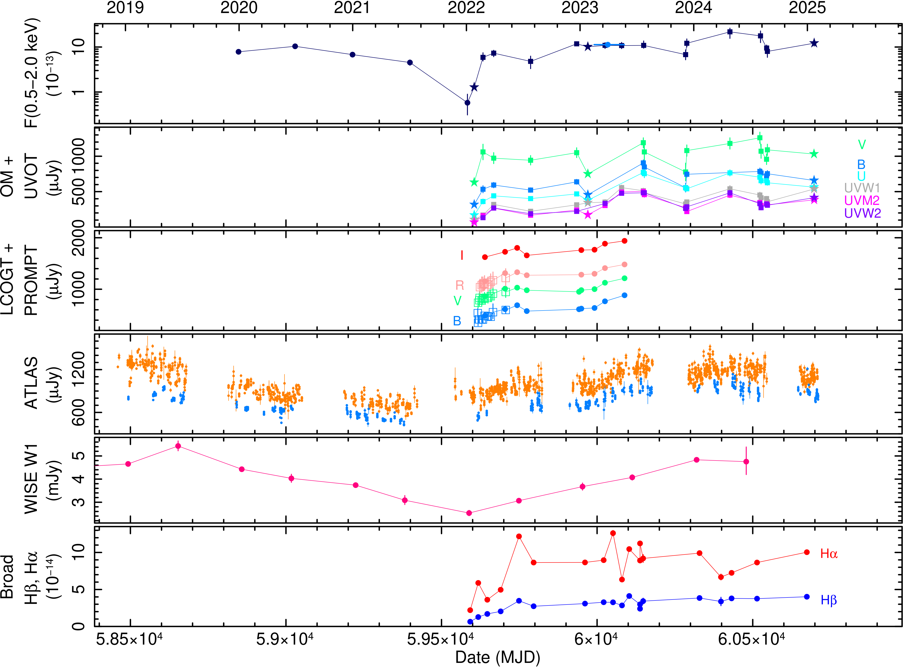
图注：Multiband continuum and broad Balmer line flux light curves. In the top panel, the black circles, stars, and squares denote X-ray fluxes from eRASS, \(\textit{XMM-Newton},\) and \(\textit{Swift},\) respectively; the blue point denotes the summed NICER data. In the second panel, the stars and squares denotes optical/UV flux densities from \(\textit{XMM-Newton}\) and \(\textit{Swift},\) respectively. The third and fourth panels show ground-based optical photometry from LCO+PROMPT and ATLAS, respectively; orange and cyan respectively denote the ATLAS $o$ and $c$ bands. The fifth panel shows the \(\textit{NEOWISE}\) W1 band photometry. For the UV, optical, and IR fluxes plotted here, no host galaxy subtraction has been done; differences in apertures and seeing among the various datasets have resulted in different levels of host contribution. The last panel shows the broad Balmer line fluxes (see $\S$\(\ref{sec:optspec}).\) Across all panels, all data are plotted with error bars, but some error bars are smaller than the data symbols.
对应解读：对应“建议重点查看的图表”第1项和“关键图表逐图导读”图1、图5：X射线—UV/光学—红外长期光变以及宽Balmer线通量随时间变化。
入选理由：这是全文最核心的时间域证据，直接展示eROSITA软X射线大幅下降、后续XMM/Swift/NICER恢复、多波段连续谱变化以及宽Balmer线通量响应，可同时支撑17倍X射线暗化、恢复阶段、多波段同向变化和宽线通量变化4–6倍等关键结论。
来源与置信度：\(arxiv_source\)；high；\(arxiv_source\) / aa58834-25corr.tex:figure[1]
Fig07
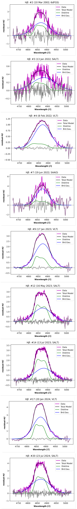
图注：Decomposition of diskline plus Gaussian components for fits to the H$\beta$ profiles of selected optical spectra. The data (after subtraction of continuum components and [\(\ion{O}{iii}\)] lines) are shown in purple; green, blue, and black denote the diskline component, the broad Gaussian component, and the total model respectively. The Y-axis units are $10^{-16}$~erg~cm$^{-2}$~s$^{-1}$~$\AA^{-1}$.
对应解读：对应“建议重点查看的图表”第4项和“关键图表逐图导读”图3：宽Hβ轮廓中diskline与宽高斯双组分分解。
入选理由：该图直接给出连续谱和[O III]扣除后的Hβ轮廓，并叠加diskline、宽高斯和总模型，是检验“两成分宽线区”主张的关键图。相比单个样例分解图，它覆盖多个代表性历元，更能判断双峰盘线结构是否随状态变化而真实增强。
来源与置信度：\(arxiv_source\)；high；\(arxiv_source\) / aa58834-25corr.tex:figure[7]
Fig02
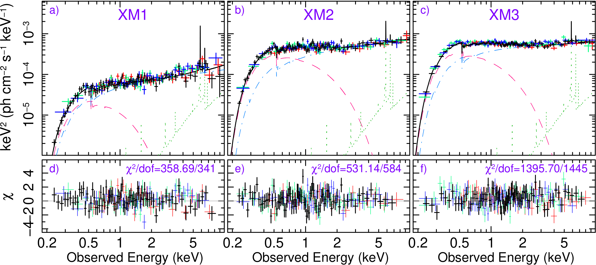
图注：Spectral data and fits for XM1--3. Black, red, green, and blue denote pn0, pn14, MOS1, and MOS2, respectively. The data have been rebinned by factors of 2, 3, and 6 in XM1, XM2, and XM3, respectively, for clarity. Panels a--c display the best-fitting unfolded models and data. The \(\textsc{CompTT},\) hard X-ray power-law, and \(\textsc{UxClumpy}\) components are respectively denoted by red dashed, blue dash-dotted, and green dotted lines, and the total model is denoted by a black solid line. The corresponding $\chi$ residuals are plotted in panels d--f.
对应解读：对应“建议重点查看的图表”第3项和“关键图表逐图导读”图4：X射线谱模型及χ残差，用于判断是否存在遮蔽或低能吸收截断。
入选理由：论文关于“不是视线遮蔽而是内禀吸积率下降”的判断依赖X射线谱形和残差。该图展示XMM三个历元的unfolded谱、CompTT、硬X射线幂律、UxClumpy及总模型，并给出χ残差，是检查低能端吸收、硬化或系统性残差的最直接图。
来源与置信度：\(arxiv_source\)；high；\(arxiv_source\) / aa58834-25corr.tex:figure[2]
Fig05
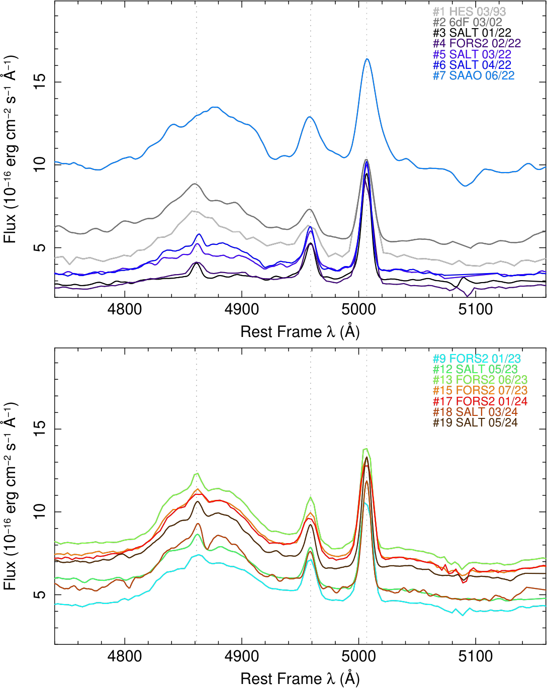
图注：H$\beta$ and [\(\ion{O}{iii}\)] regions of selected optical spectra. The latter spectra (right panel) correspond to the resurgence of the diskline component, as discussed below. These spectra have been gray-scaled so that the integrated [\(\ion{O}{iii}\)] fluxes match. Smoothing has been applied for visual clarity only, using a boxcar of width 5~$\AA$ for all spectra, except for #2 and #7 where the width was 10~$\AA$.
对应解读：对应“建议重点查看的图表”第2项和“关键图表逐图导读”图2：多历元Hβ与[O III]区域光学光谱对比。
入选理由：该图以[O III]通量匹配后的方式比较选定光谱，能直观看到Hβ宽线从强到弱再恢复以及后期diskline组分回归的形态变化；它比全部21条任意平移光谱更聚焦于变脸分类和宽线残留问题。
来源与置信度：\(arxiv_source\)；high；\(arxiv_source\) / aa58834-25corr.tex:figure[5]
Fig08
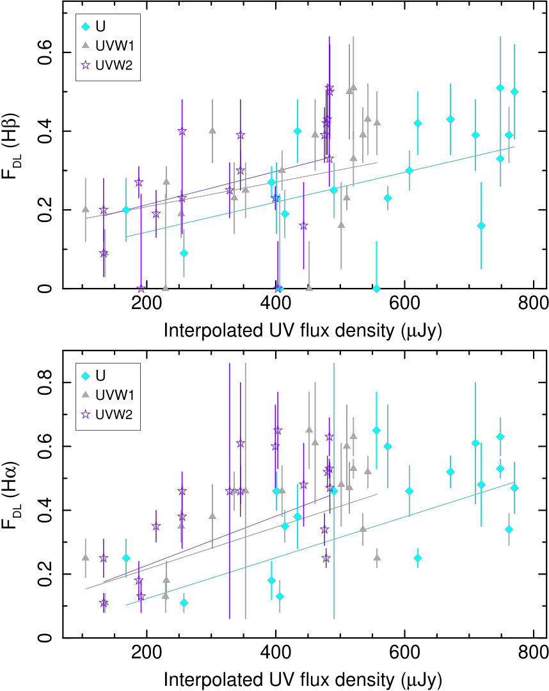
图注：$F_{\rm DL}$, the ratio of diskline component intensity to total broad-line intensity for the H$\beta$ line (left panel) and H$\alpha$ line (right panel), as a function of UV flux density, interpolated to match the dates when the optical spectra were taken. Cyan, gray, and purple denote U, UVW1, and UVW2 flux densities, respectively. The solid lines indicate the best-fitting linear relations, meant to guide the eye. Positive correlations occur in all bands for both H$\beta$ and H$\alpha$, indicating a link between UV continuum emission and the broad Balmer profiles.
对应解读：对应“建议重点查看的图表”第5项和“关键图表逐图导读”图6：diskline相对贡献随UV连续谱变化的关系。
入选理由：该图直接绘制Hβ和Hα中diskline强度占总宽线强度的比例随U、UVW1、UVW2通量密度变化，并标出线性趋势，是验证“连续谱升高时diskline贡献增强”这一核心物理解释的关键诊断图。
来源与置信度：\(arxiv_source\)；high；\(arxiv_source\) / aa58834-25corr.tex:figure[8]
Fig10
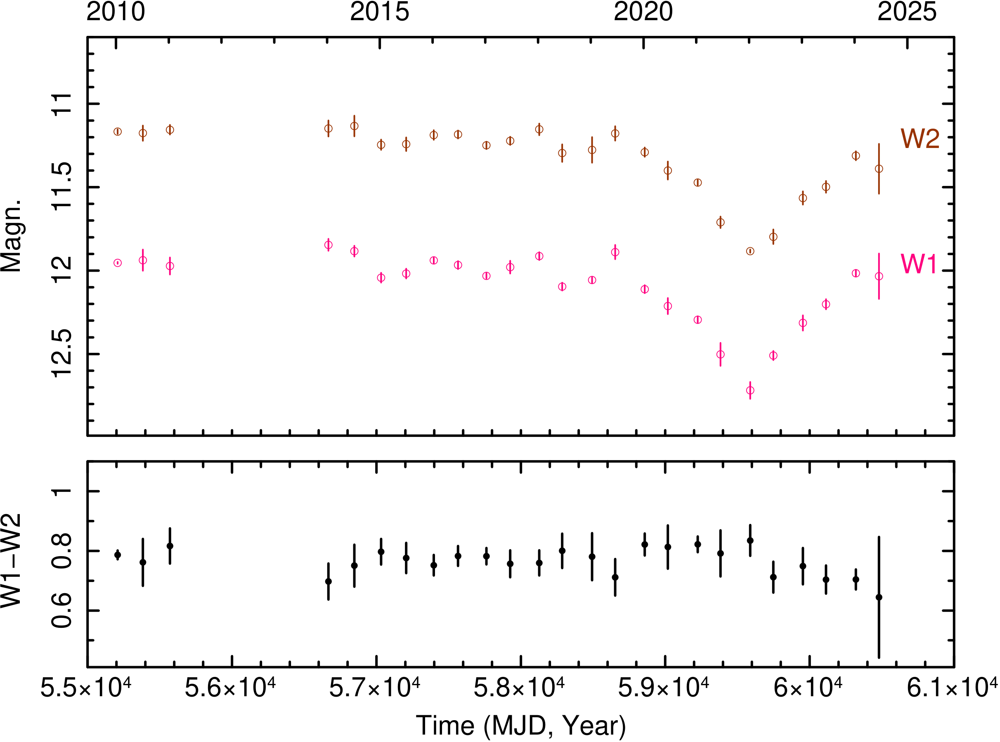
图注：\(\textit{WISE}/\textit{NEOWISE}\) W1 and W2 band light curves, binned to 180 days (top panel). W1$-$W2 is plotted in the lower panel.
对应解读：对应“建议重点查看的图表”第7项：WISE/NEOWISE红外光变与颜色，用于判断尘埃连续谱是否经历低态。
入选理由：红外响应是排除单纯视线遮蔽、支持中央照明真实下降的重要旁证。该图给出W1、W2长期光变和W1−W2颜色，可检查尘埃再辐射是否随整体活动状态变化，而不仅仅依赖X射线和光学谱解释。
来源与置信度：\(arxiv_source\)；high；\(arxiv_source\) / aa58834-25corr.tex:figure[10]
强相关工作
这篇工作与 changing-look AGN 的一系列经典发现相连，例如 Mrk 590、NGC 2617、Mrk 1018、1ES 1927+654 等源都显示过宽线和连续谱的强烈状态变化。相似工作的关键词可检索“changing-look AGN broad H beta reverberation”, “eROSITA changing-look Seyfert”, “AGN accretion rate transition”, “Mrk 590 changing look”, “NGC 2617 changing look”。与这些工作相比，HE 1237-2252 的突出点是由 X 射线巡天发现低态，并在恢复阶段看到宽线轮廓中盘线组分相对增强。
在基础理论上，它关联到 Shakura-Sunyaev 薄盘、AGN 宽线区半径-光度关系、光电离模型和双峰发射线盘模型。可检索“Shakura Sunyaev disk”, “Bentz radius luminosity relation H beta”, “AGN disk emitter double peaked Balmer lines”, “BLR photoionization ionization parameter”。这些理论为解释半径、线宽、电离连续谱和盘线轮廓提供基本框架。
存在张力或相反观点的方向主要是遮蔽模型与内禀吸积变化模型之争，以及双峰线是否必须来自盘而非双黑洞或外流。检索关键词包括“changing look AGN obscuration versus accretion”, “partial covering absorber changing look AGN”, “double peaked broad lines binary black hole alternative”, “velocity resolved reverberation disk emitter”。本文的证据倾向内禀吸积率变化，但由于极紫外不可直接观测、盘线分解非唯一，仍需要更密集的时间域数据来排除替代解释。
相似工作：
- https://arxiv.org/abs/2605.07965
- https://ui.adsabs.harvard.edu/search/q=changing-look%20AGN%20broad%20Hbeta
- https://ui.adsabs.harvard.edu/search/q=eROSITA%20changing-look%20AGN
基础理论 / 方法工作：
- https://ui.adsabs.harvard.edu/search/q=Shakura%20Sunyaev%201973%20accretion%20disk
- https://ui.adsabs.harvard.edu/search/q=Bentz%20radius%20luminosity%20relation%20H%20beta%20AGN
- https://ui.adsabs.harvard.edu/search/q=AGN%20double-peaked%20Balmer%20disk%20emitter
相反观点 / 张力线索：
- https://ui.adsabs.harvard.edu/search/q=changing-look%20AGN%20obscuration%20versus%20accretion
- https://ui.adsabs.harvard.edu/search/q=partial%20covering%20absorber%20changing-look%20AGN
- https://ui.adsabs.harvard.edu/search/q=double-peaked%20broad%20emission%20lines%20binary%20black%20hole%20disk%20emitter
说明
评分由 LLM 给出初评，再由本地阈值策略过滤；IACT / 大气切伦科夫望远镜相关论文按 HE 同等优先级处理，其他非 HE 论文需要明显关联高能天文、宇宙线、伽马射线或仪器/方法价值才会保留。